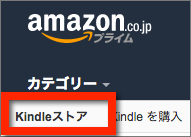
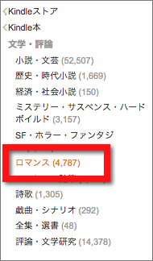
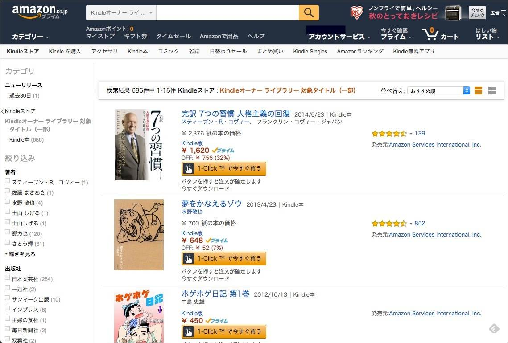

| Kindleストアの歩き方 (海外編): 世界中どこからでも読書三昧！ 読書三昧シリーズ (６) | |
| 大山賢太郎 | |
| HONNOTANA BOOKS (2015) | |
大山賢太郎
快適で楽しい読書ライフシリーズ
- Kindleで人生２度目の読書三昧: 素晴らしい読書体験が手に入る！
- スマホでKindle読書三昧: ４倍効果で、頭がよくなるスマート読書術！
- デジタル読書の技法: アナログ人間が飛躍する知識術
- Kindleストアの歩き方 (海外編): 世界中どこからでも読書三昧！
大山賢太郎の公式ブログ「読書三昧な日々 」（http://dokushozanmai.hateblo.jp/ ）では、快適で豊かな読書三昧な読書ライフを楽しむための最新情報を公開しています。また、大山賢太郎への連絡や最新情報のメール購読も こちら から。
まえがき
本書は、海外にお住まいで日本語の本を読まれる方々が、海外にいながらKindleで読書三昧するためのマニュアルとなることをめざしています。
これまで、海外に住んでいると日本語Kindle本は購入できないと考えられてきました。海外から日本Amazonを経由してKindle本を購入することはできないからです。しかし、この状況は急速に変わりました。世界中からKindleストアで日本語の電子書籍を手に入れて、すぐに楽しめる環境が整ったのです。
本書でこの全貌を明らかにし、海外に居住しながらもKindleストアをフル活用して日本語の本で読書三昧するお役に立てればと考えています。
私自身、学生時代と海外駐在で10 年以上アメリカに滞在し、異文化の荒波にもまれた経験があります。その中で、やはり一番記憶に残っているのは日本語の書籍での読書の時間でした。
自分自身の向かうべき道、自己啓発のためだけでなく、息抜きに読むエッセーや時代小説に没頭した読書三昧の時間は、素晴らしい経験でした。
しかし、海外滞在中に一番困ったのは、大好きな本を自由に手にする機会が非常に限定されていたことです。多くて年に数回の帰国時に大型書店で買いだめをしたり、日本にいる家族から送ってもらったりなど、苦労をしました。
あるいは、日本人の多く住む都市の食品店やショッピングセンターで目玉が飛び出るほどの価格で購入するのが精一杯でした。
そんな私が、ある出来事から素晴らしい読書体験をしました。そして、その体験をきっかけに自分で書いた本を、AmazonのＫＤＰというシステムを通じて、世界中で出版するまでになりました。
その過程で気づいたのは、海外にお住まいの方々が日本語の電子書籍を購入する方法をほとんど知らないということでした。
２００７年にAmazonが開始したKindleは、５年後の２０１２年にアメリカのほか日本、イギリス、ドイツを追加して以来、今や世界13 カ国に展開するまでになりました。その間、日本語の電子書籍（日本語Kindle本）は飛躍的に世界中に普及しています。
その13 カ国とは、日本、アメリカ、イギリス、ドイツ、フランス、オランダ、スペイン、イタリア、ブラジル、オーストラリア、カナダ、インド、メキシコ です。
この13 カ国以外にお住まいの場合は、アメリカのAmazonから購入することになります。
つまり、日本語のKindle本を、世界中どこからでも、いつでも、すぐに手に入れることができるようになった のです。
具体的な数字でご紹介しましょう。例えば、アメリカ在住の方であれば、６万冊以上の日本語電子書籍（内約３万冊は月額課金の読み放題、約１万冊は無料）から読みたい本を選んで、すぐに読書三昧を始めることができます。
日本とアメリカ以外のKindleストアでも、３万５千冊〜４万冊以上の中から、アメリカとほぼ同じボリュームの読み放題や無料の本のリストから選ぶことができます。
しかも、この数は早いペースで増えていっています。Kindleストアは、アメリカで当初はわずか９万冊から始まりました。日本での開始時も、日本語Kindle本はわずか７万冊でした。
これが現在では、アメリカでは１０００万冊を超え、日本語Kindle本もわずか数年で約40 万冊まで増えています。
近年のクラウド技術は、デジタル社会に爆発的な変化をもたらしており、電子書籍はもちろん音楽、動画などのデジタルコンテンツにおいてもめざましいものがあります。
世界中、いつでもどこでも、大好きな日本語の本などのコンテンツをすぐに手に入れて、スマホなど手もとにあるデバイスで楽しむ環境が、すでに始まっています。
そんな、夢のようなことが今や現実となったのです。本書では、日本語の本を心ゆくまで楽しむ、快適で楽しい読書体験をお届けしたいと思います。この後から、そのシンプルで簡単な、かつ具体的な方法をお知らせします。
もしあなたが気の早い方で、あなたの住む国がカバーする正確な地域について今すぐ確認したいとお考えであれば、「付録１−Kindleの便利情報−海外編 世界13 カ国のKindleストアと対象地域一覧 」をご覧ください。
この本を最後までお読みいただくと、海外からは日本語の電子書籍が手に入らないというこれまでの常識はくつがえされ、読みたい本をいつでもどこからでも手に入れて、すぐに読み始められるようになるでしょう。「海外にいながら自由に日本語の本を読める 」。これは素晴らしい体験です。
本書では、この「Amazon宝島 」の宝探しの地図と探検の仕方を解説していきます 。
まず、第１章「なぜ、海外から買えないのか」 で、これまでの常識をくつがえす答えをお話しします。
次に、第２章「海外で日本語Kindle本を購入する２つの簡単な方法」 で結論を差し上げます。
そして第３章「購入するための具体的な方法」 を読み終えれば、日本語Kindle本をすぐに手に入れて楽しめるようになるでしょう。
そのあと、「Kindleストアの歩き方 」に入っていきます。AmazonのKindleストアは、まさに、広大な宝島の密林です。しっかりとした地図や現地のガイドなしでは、迷子になってしまいます。本当のアマゾンなら、命を落としかねません。
第４章では「Kindleストアの歩き方（パート１） 」として、Kindleストアのおおまかな仕組みをご紹介し、海外（日本以外）のKindleストアで日本語Kindle本のお宝を探す方法を具体的に解説します。
この後、第５章「Kindleストアの歩き方（パート２）」 で、自分が本当に読みたい本のお宝を、日本のKindleストアを活用してピンポイントで探す具体的な方法に入っていきます。
そして最後に、第７章「海外で日本語Kindle本を楽しむための３つの方法 」、さらに２つの付録「Kindleの便利情報−海外編 」と「電子書籍の基礎知識： 今さら聞けない27 の疑問 」という、初心者でもすぐに快適で楽しい読書を始められるための追加情報を加えました。
ここで一つ、小さなお願いがあります。
最後までお読みになって満足いただけたら、ぜひ、お友だちにこの情報をシェアしてください。海外で日本語の本を読みたいと望んでいる、できるだけ多くの方々に、日本語の読書三昧を心ゆくまで楽しんでいただきたいからです。
さあ、それではご一緒に、日本語で読書三昧の世界に進んでいきましょう！
目次
２ 海外から日本語Kindle本を買えない理由はこれだった！
第２章 海外で購入できる日本語Kindle本を探す２つの簡単な方法
第３章 購入するための具体的な方法（アメリカAmazonの例）
５ 日本語Kindle本を簡単に購入して、すぐに読み始める方法
４ 海外のKindleストアで日本語Kindle本を探す方法
２ 日本AmazonにあるKindle本を海外で購入する方法
第１章 なぜ、海外から買えないのか
１ 日本語Kindle本をめぐる背景
２００７年にAmazon.comは、これまでのオンライン書店の中にKindleストアと呼ばれる本格的な電子書籍の事業を開始しました。しかし、このKindleが始まった後も日本語の書籍が海外では入手困難という状況は変わりませんでした。
というのも、Kindleは英語やヨーロッパの言語に限定されていたらからです。当時の電子書籍のフォーマットでは、縦書きで右から左に向かって読む日本語には対応できなかったのです。
海外に住む日本人は２００万人といわれます。Amazonの電子書籍が始まってから、日本語のKindleが手に入るのを心待ちにしていた方はとても多かったはずです。そしてついに、２０１２年に日本でKindleストアが開始されました。
しかし残念なことに、日本Amazonのアカウントを持っていても、海外からアクセスした場合には、日本AmazonでKindle本を購入することは今もできません。
これは一体、どうしてなのでしょうか？
特に海外に住む日本人なら、誰もが不思議に思うところではないでしょうか。
２ 海外から日本語Kindle本を買えない理由はこれだった！
Amazonはこの問題について、特に企業としての考え方は公開していません。そこで、筆者自身でこれまでの経緯を調べた結果を簡単にまとめてみます。
海外から日本語Kindle本を買えない理由
少し入り組んだ内容となるため、興味がないという方は、概要だけでも知っていただければと思います。
結論から言うと、電子書籍の課税や著作権などの法律、出版社や著者との対応、さまざまな言語等に対応するため、Amazonはすでに進出している13 の国々で顧客の居住国別に出版と販売を分ける必要があったのです。
中でも、特に大きな問題は課税でした。電子書籍や音楽などのデジタルコンテンツは、最近課税の取り扱いが変わり、海外の国から配信されたものあってでも、購入者が住む国の消費税が課されるようになりました。
これは国際的な潮流で、すでにヨーロッパ（２０１５年１月１日）と日本（２０１５年10 月１日）でこの基準による課税が始まっています。
Amazonは、このような課税の仕組みに国別に対応する必要がありました。また、数多くの出版社や著者と各国の言語や商習慣でやりとりし、なおかつ著作権などの問題にも取り組まければなりません。
このためAmazonは、主要な顧客が住む国ごとにKindleストアを運営する体制を一気に整えたのです。そして、それらの国と地域ごとに、販売と出版の枠組みを作りました。
従って、日本以外の国から日本Amazonにアクセスしても、購入できない仕組みになっているのです。言い換えれば、自分が住んでいる国のAmazonのKindleストアがあれば、そこから日本語Kindle本を購入することはできます 。
また、住んでいる国にAmazonがない場合でも、Amazon.comのKindleストアから購入できます。つまり、世界中どこからでも日本語Kindle本を購入して読書三昧することができるのです！
これまでの経緯
ここから、もう少し詳しい説明に入ります。飛ばして先に進んでいただいても問題はありません。興味のある方はお付き合いください。
公開されている情報から、さきほどお話しした事項については、法律上の問題が大きいということが想像できます。中でも、一番大きな要因は税法と考えられます。
特に、デジタルコンテンツが国境を超えて販売されるようになったここ10 年ほどで、この問題は各国の税務当局にとっての大きな課題となってきたようです。
インターネットを介して配信される音楽や電子書籍などのデジタルコンテンツやクラウドサービスなどやサービスは、国の垣根を簡単に超え、世界中に販売できます。
これは、国の法律で管理することを前提としたこれまでの経済や商行為ではまったく想定していなかったことです。
そのため、インターネットが急速に普及し、ｅコマースが瞬く間に経済の重要な位置を占めるにつれ、税法や著作権法など、これまでの法律では対応できない場面が次々と噴出してきました。
中でも、愛読家にもっとも大きな影響を与えるのが消費税の問題です。Amazon、Google、Appleといった大企業がインターネット上でクラウドと呼ばれるインフラを使い、全世界的にデジタルコンテンツを大規模に配信し始めました。
このほかにも、クラウドサービスは多方面に、急速に拡大しています。
電子書籍に関しては、Amazonはアメリカで設立された会社を通じて世界中にKindle本を販売しています。
これまで、外国の企業が日本に事業拠点を持たずに電子書籍や音楽などのデジタルコンテンツを配信することに関して、消費税を課すという明確な取り決めはなく、非課税となっていました。
しかし、日本でオンライン書店を展開する企業には、当然ながら消費税が課されます。このため、アメリカ法人のAmazonやカナダ法人の楽天Ｋｏｂｏなどに対して、日本の出版や書店関係から不公平だという声があがるなど、問題となっていました。
同時に、このような事例を含む「税金逃れ」の問題は、国際的にも議論が高まりつつありました。このような中、OECD（経済協力開発機構）の租税委員会は「税源浸食と利益移転（BEPS: Base Erosion and Profit Shifting）行動計画 」の１で、デシタルエコノミーと課税問題について課税の方向性を示したのです。
これは、デジタルコンテンツのサービス提供者（プロバイダー）が外国法人であっても、サービスの購入者が国内の居住者の場合は、金融機関などが源泉徴収を担当して消費税を課すことができる、という内容でした。
日本でも、税制調査会で検討がかさねられ、２０１４年の税制改正で、事業者ではなく購入者の居住国ベースで２０１５年10 月１日から課税を開始すると正式に決まりました。
この取り扱いは「国境を越えた役務の提供に係る消費税の課税の見直し等について 」として国税庁から公開されています。
ヨーロッパでは、消費税に似たＶＡＴ（付加価値税）がありますが、２０１５年１月１日からは消費者の居住国での課税が開始されています。
これまで、日本の出版社もAmazonのKindleストアで電子書籍を販売してきましたが、このような理由もあり、海外のKindleストアで販売することには消極的でした。
しかし、この問題が解決されたわけですから、海外で販売しない理由はもうありません。
海外で販売するかどうかが決まれば、手続きは簡単。出版社のAmazonの専用アカウントのページを開いて、販売したい国の選択ボックスをクリックするだけです。
今後、海外のタイトル数も急速に増加していくだろうと考えられます。
３ 日本語Kindle本はどこで購入できる？
Amazonは世界中でKindleストアを続々オープンしています。Amazon.com以外にも、２０１２年には日本、イギリス、ドイツで開始され、本書の執筆時点では、世界13 カ国で展開しています。
この事業展開のスピードは驚くべきものです。これまでAmazon.comからしか購入できなかったものが、まだ限定的ではありますが、十数カ国以上の言語の電子書籍が、世界中で簡単に手に入れられるようになったのです。
本書の執筆時点で、日本語のKindle本を購入できる国は以下の通りです。（巻末の「付録１−Kindleの便利情報−海外編 」で各Kindleストアへのリンクをつけています。）
日本、アメリカ、イギリス、ドイツ、フランス、オランダ、スペイン、イタリア、ブラジル、オーストラリア、カナダ、インド、メキシコ
上記13 カ国のKindleストアを日本語Kindle本の販売数などでまとめた概要は、以下のとおりです。
※ 各国のKindleストアのカテゴリーの数字を集計した。 ＊ １
ここで注意したいのは、Amazonの電子書籍に関しての方針は、Kindleストアがある国からの購入に限定する、ということです。では、この13 カ国に住んでいない場合は、どうなるのでしょう？
心配はいりません。これらのKindleストアでカバーされていない地域にお住まいの方は、Amazon.comから購入できるのです 。
ですから、海外から日本AmazonにアクセスしてKindle本（日本語かそれ以外かにかかわらず）を購入することはできません。日本以外の場所から日本Amazonにアクセスすると、日本Amazonにアカウントを持っていても、購入できないのです。
これは、現在日本に住んでいて、日常的に日本AmazonからKindle本を購入している人でも同じです。
さらに、海外の人に意外と知られていない事実があります。それは先ほどの表からもお分かりいただけるように、海外でも、かなりの数の日本語の電子書籍がすぐに手に届くところにある ということです。
例えば、本書の執筆時点でAmazon.comにおける英語以外の外国語の電子書籍は約67 万冊、そのうち約６万冊が日本語の電子書籍です。しかも、このうち約３万冊は読み放題（Kindle Unlimited）、約１万冊は無料で読むことができるのです。
また、このほかのKindleストアがある各国でも、日本語カテゴリーの電子書籍は約４万冊あり、そのうち２万４千冊が読み放題（Kindle Unlimited）です。
Kindle Unlimitedとは、月額およそ１、０００円程度で約１００万冊の電子書籍が読み放題になる定額サービスです。世界13 カ国のKindleストアのうち、日本、オーストラリア、オランダを除く10 カ国でこのサービスを利用できます。
表をご覧いただいてお分かりのとおり、各国のKindleストアでは４００万冊〜９００万冊の電子書籍を購入できます。その数は毎月約９万冊追加され、日本語のKindle本も毎月１、５００冊〜２、０００冊程度追加されています。
日本をはじめとする各国のAmazonでKindle本が急増している中、各国のKindleストアから購入できるこの日本語Kindle本の数も急速に増えています。
海外在住であっても、今すぐ、日本語Kindle本を手に入れることができるのです！
＊ １ 脚注世界 13 カ国の Kindle ストアの総タイトル数、日本語カテゴリー、日本語 Kindle Unlimited の一覧表 総タイトル数は、２０１５年10 月23 日における各Kindleストアのebooksページのカテゴリーの数値を合計した。日本のKindleストアでは、Kindle本トップページのカテゴリーとKindle洋書トップページの各カテゴリーに表示される数値を合計した。それぞれの数値の合計とは一致しない。この誤差をAmazon.co.jpのカスタマーサービスに問い合わせたが、明確な回答は得られなかった。
第２章 海外で購入できる日本語Kindle本を探す２つの簡単な方法
１ どうしたら海外で日本語Kindle本は手に入るのか？
ここまでのお話で、なぜ日本Amazonでは海外からアクセスしてKindle本を購入できないのか、そして、どうしたら日本語Kindle本を海外で購入できるのか、その概要をお分かりいただけたのではないでしょうか。
ここからは、日本以外の国にお住まいの方を対象に、どうしたら海外で自分が読みたい日本語Kindle本を見つけて購入できるのか、その方法を説明していきます。
Kindleストアがある13 カ国すべてについて、個別に説明するには紙面に限りがあります。このため、ここでは主にアメリカと、この13 カ国以外に在住の方が日本語Kindle本を購入する場面を例にして進めていきます。
結論から言うと、Amazon.comで日本語Kindle本を超お手軽に探すには、「海外のKindleストアで探す 」と「日本AmazonのKindleストアで探してから海外のKindleストアで検索する 」の２つの方法があります。この後、その方法の詳細をご説明します。
※
アドバイス
アメリカ以外にお住まいの方でも、言語の違いを除けば、自国のAmazonサイトの内容はほぼ同じですが、国によって違いが出ることもあります。
※
注意
すでに自国のAmazonアカウントをお持ちで、ショッピングを楽しんでいらっしゃる方も多いでしょう。しかし、言葉や習慣の違いもあって、はじめてという方も少なからずおられます。
そこで、次章「４ 購入するための具体的な方法（アメリカのAmazonの例）
」では、アカウントの開設や設定などについて解説していきます。
すでにお済みの方は、次に進んでいただいても問題ありません。
２ 海外のKindleストアで見つける方法
これまで説明してきたように、日本語Kindle本はあなたがお住まいの国のKindleストア、またはアメリカのAmazonで購入できます。「灯台もと暗し 」とはよく言ったもので、実は手が届くところに欲しいものはあったのです。
まずは、あなたがお住まいの国のKindleストアを歩いて探していきましょう。しかし、言葉の壁もあって日本人にとって海外のAmazonの中を探すのはハードルが高いかもしれません。
ではどうしたらうまく探せるのか。まず簡単な方法をご紹介します。
外国語カテゴリーから日本語カテゴリーを探す
Amazon.comでは、ショッピングサイトのトップページ左上のロゴのすぐ下にある「Shop by Department 」にマウスオーバー（マウスのポインタをボタンの上にのせる）します。
すると、Kindleストア用のメニュー画面が開きます。
「Kindle E-readers & Books 」へ、 そして「Kindle Store 」すぐ下にある 「Kindle Books」 と進み、クリックします。
開いたページの左側のサイドバーを下に進み、「Show results for 」の「Kindle eBooks 」のリスト中段にある「Foreign Languages 」カテゴリーをクリックします。
アメリカ以外のKindleストアでは、カテゴリーリストの一番下に「eBooks in Foreign Languages 」というカテゴリーがあります。ここをクリックします。次の画像はイギリスの例です。
次に新規画面の左側のサイドバーの「Kindle Store 」の「Show results for 」にある「Japanese 」をクリックします。アメリカ以外のKindleストアでは、「eBooks in Foreign Language 」という欄が表示されます。その中に「Japanese 」がありますので、クリックして開きます。
するとAmazon.comやその他の国のAmazonのKindleストアが販売する日本語Kindle本が表示されます。左サイドバーにあるJapaneseカテゴリーの下には、さまざまな日本語Kindle本のサブカテゴリーが並びます。
これらサブカテゴリーは、日本AmazonのKindleストアのカテゴリーよりも詳細に分類がされています。ここから絞り込んでいきましょう。
海外のKindleストアにある日本語カテゴリーは、まだサービスが始まったばかりです。外国語カテゴリーの一部という位置づけであり、その数もまだ限定的です。
そのため、特に使いはじめの時点では、Amazonが得意とする「おすすめ 」や「これを買った人はこれも買っています 」のようなレコメンド機能はあまり効果を発揮しません。また、日本語を母国語とする私達にとって、現地の言葉に堪能な人を除いては、外国語で日本語の本を探すのはためらうものです。
そうなると、海外のKindleストアで読みたい日本語Kindle本を探すのは、至難の業のように思えてきます。
しかし、ここで朗報があります。
これまで、日本以外のAmazonサイトでは、日本語で検索をすることはできませんでした。それがKindleストアの世界展開にともない、外国語のAmazonサイトでも日本語を使っていろいろなことができるようになりました。
例えば、次のようなことができます。
・限定的ながら、日本語で検索ができる
・日本語で読者レビューを書き込める
こういった便利機能については、第４章「Kindleストアの歩き方（パート１） 」で詳しく解説します。
商品ページで日本語の説明文を表示する
すでにお気づきかと思いますが、日本語Kindle本のタイトルはすべて英語表記です。日本語のタイトルを単純にローマ字表記したものや英語のタイトルで表現したものもあります。
これは、日本Amazonで出版する際に、日本語タイトルに追加して英語またはローマ字のタイトルを併記することが求められているからです。しかし、Kindle本の説明は、日本Amazonで表示されているものとまったく同じ日本語の内容が表示されます。
日本語の説明を表示するには、表紙の画像やタイトルをクリックして商品ページを開きます。英語タイトルから下にたどると日本語のタイトルと「Book Description 」の商品説明の最初の部分が日本語で表示されます。
日本語の説明全体を表示するには、「Show more 」をクリックします。（これはKindleストアにって表示が異なります。以下はイギリスの例です。）
これで、海外のKindleストア内で日本語Kindle本の説明を日本語で読むことができます。
３ 日本で見つけてから海外のKindleストアで探す
日本語の本を探すのであれば、日本Amazonで探すのが一番簡単なのは事実です。売れ筋やランキング、人気度、読者レビューなど、自分が読みたい本を探すには比較にならないほど、日本での情報が満載だからです。
しかし、海外のAmazonで日本語のタイトルを使って検索するわけにはいきません。そこで、日本Amazonで自分が読みたい本をまず探します。そして、日本のKindleストアやお住まいの国のKindleストアに共通するキーを使って検索すれば、一発で探し当てられるのです。
これはとてもシンプルで簡単な方法です。詳しくは、「第５章Kindleストアの歩き方（パート２） 」もご覧ください。
これで、日本語Kindle本は海外の地元のKindleストアまたはAmazon.comで手に入ることが分かりました。
この後からKindleストアの中に入っていきますが、日本にはあっても、海外のAmazonにはアカウントを持っていない方も少なくありません。そこで、まずは海外のAmazonアカウントの開設と購入の方法、そして日本語Kindle本を読むための端末と無料アプリの設定方法を簡潔に解説します。
すでに、これらすべての準備が整っている方は、次に進んでいただいても問題ありません。
第３章 購入するための具体的な方法（アメリカAmazonの例）
１ 日本語Kindle本を読むための準備
Amazon.comやあなたがお住まいの国のKindleストア、日本のKindleストアで欲しい本が見つかったら、１日24 時間、１年３６５日、いつでもどこからでも購入して、すぐに日本語での読書が始められます。
日本語Kindle本を読むために必要なのは、iPhoneやAndroidなどのスマホ、iPadやAndroidタブレット端末、パソコンやMac、Kindle専用のリーダー端末（Kindle端末）などです。
スマホの普及率が急速に高まり、読書を楽しみたい層のほとんどが、このいずれかの端末を持つようになりました。はじめての方でも、簡単な設定だけでＯＫ。使いなれた端末ですぐに読み始めることができます。
設定方法は簡単です。
１ Amazonアカウントを開設する（お住まいの国のAmazonにアカウントがない場合）
２ One-click設定をする
３ Kindle無料アプリなどを設定する
４ 購入して読みたい端末にダウンロードする
４を除けば、一回の簡単な作業で設定は完了です。ここでは、お住まいの国のAmazonアカウントをお持ちでない方がアカウントを開設し、Kindle本が読めるようになるまでを、ステップ・バイ・ステップで解説していきます。
すでにアカウントを持っている、One-click設定を済ませたという方は、次のセクションまでお進みください。
２ お住まいの国のAmazonアカウントを開設する
「日本語Kindle本はどこで購入できる？ 」で特定された国にお住まいで、その国のAmazonにアカウントをお持ちでない方は、アカウントを新たに開設する必要があります。
ここでは、例としてAmazon.comのアカウントを開設する方法をお話しします。他の国の手続きもだいたい同じですので、参考にしてください。
Amazon.com のアカウント開設方法
Amazon.com の画面を開き、画面右上の「Hello, sign in Your Account 」にマウスオーバーし、「New customer? Start here 」をクリックします。

新規登録画面が開きます。
「Registration 」に「お名前（ローマ字では名／姓の順） 」「Ｅメールアドレス 」「確認用のＥメールアドレス 」「パスワード 」「確認用のパスワード 」「携帯電話番号 」（オプション） の順に入力し、間違いがなければ「Create account 」ボタンをクリックします。
これでアカウントの登録は完了です。
KindleストアでKindle本を購入するには、この後で説明する「クレジットカード登録とOne-click設定 」が必要です。
２つのAmazon.comアカウントを結合する（必要な場合）
すでにAmazon.comにアカウントをお持ちで、Kindleストアでいずれかの言語のKindle本を過去に購入したことがある人は、Amazon.comとお住まいの国のAmazonのアカウントを結合する必要があります。
これはAmazonに対して、自分が実際にどちらの国に居住しているのかを告知するためです。この結合により、これまでAmazon.comで購入したKindle本も、お住まいの国のKindleストアを経由して同時に管理できるようになります。
この状況にあてはまる、という方は、「付録１−Kindleの便利情報−海外編 ２つのAmazonアカウントを結合する方法 」をご覧ください。
３ クレジットカードの登録とOne-click設定
Kindle本を購入するには、お住まいの国のAmazon（またはAmazon.com）にクレジットカードを登録し、One-click設定することになります。この設定は、パソコンやタブレット端末のブラウザ画面から簡単にできます。ログインしていない場合は、まずはログインして下さい。
クレジットカードの登録
Amazon.comの画面上にある「Hello, （あなたのファーストネーム） 」横にある「Your Account 」にマウスボタンを合わせて表示される一番上のメニュー「Your Account 」をクリックします。
「Your Account 」ページの「Setting 」欄の「Amazon Wallet 」に入り、「Payment Methods 」の下にある「Add a Credit or Debit Card 」から登録しましょう。
One-click設定
One-click設定は、同じページの「Setting 」欄「Account Setting 」の「1-Click Settings 」から行います。
４ 日本語Kindle本を読むためのアプリを設定する
Kindle無料アプリやKindle端末を用意
お住まいの国やAmazon.comのKindleストアで購入したKindle本を読むには、無料アプリまたはKindle端末が必要です。スマホ、iPad端末、Android端末では、Kindle用のアプリを無料でダウンロードしてインストールします。パソコンでは、Amazonのキンドル無料アプリページからダウンロードして、インストールします。
すでにインストール済みという人は、この後の「日本語Kindle本を簡単に購入して、すぐに読み始める方法 」に進んでください。
スマホとタブレット端末
スマホ、iPadやAndroidのタブレット端末から、ゲームアプリをダウンロードするのと同じように、Kindle専用アプリをダウンロードできます。ただしAppleのiPhoneとiPad（iOS）、Androidのスマホや端末では、それぞれダウンロードするストアもアプリも違いますので注意してください。
・iPhoneとiPad ： Apple Storeからアプリをダウンロード
・Android携帯または端末 ： Google Playからアプリをダウンロード
どちらも「Kindle 」で検索すると、青いボタンに黄昏時の樹の下で本を読む少年が描かれたロゴが見つかります。もちろん、Kindleアプリは無料です。
２つのアプリの画面や操作方法は微妙に違います。
アプリの詳しいインストール方法、アプリからKindle本を購入できるかどうかやその方法、機能をフルに使って快適で楽しい読書をする方法については、拙著「スマホでKindle読書三昧： ４倍効果でスマート読書術！ 」で詳しく解説しています。参考にしてみてください。
Kindle for PC/Mac（ＰＣまたはＭａｃ用アプリ）
お住まいの国のAmazonまたはAmazon.comの無料アプリのページからダウンロードし、インストールします。使い慣れた自分のパソコンでKindle本の読書も楽しめます。デジタルならではの機能を使って、読書と同時に読書から得た知識を使う作業に向いているでしょう。
Amazon.comのダウンロードページは次のとおりです。お住まいの国のAmazonの専用ページからダウンロードできます。Kindleストアの画面上のメニューの「Free Reading Apps 」をクリックして開きます。
Kindle、Kindle Paperwhite、Kindle Voyage、Fireタブレット（Kindle端末）
こちらはKindle、Kindle Paperwhite、Kindle Voyageなどの、Kindle本専用の読書端末です。スマホやタブレット端末とは違い、目にやさしく読みやすい画面で読書を楽しめるのが何よりうれしいポイントです。
６インチの白黒ですが、紙の印刷と同様の技術であるe-ink画面であり、小説や実用書など文字中心のKindle本には最適です。他のアプリにはない機能もあり、愛読家御用達のツールです。
FireタブレットはカラーのＬＥＤ画面で、６インチから10 インチまで４つの画面サイズとＨＤ画質から選べます。以前は「Kindle Fire 」と呼ばれていました。最近のFire TVシリーズの登場と、動画見放題の動画コンテツ配信用サービスの強化との一環で、名称が変更されました。
プリインストールされたAndroid用のKindleアプリでKindle本の読書を楽しめます。
インストールしたら、アマゾンのＩＤとパスワードでログインしておきましょう。パソコンのブラウザでAmazon.comにログインするときのものとまったく同じものでログインできます。
これで、海外で日本語Kindle本を読むための準備は完了です。
５ 日本語Kindle本を簡単に購入して、すぐに読み始める方法
ここまでで、海外から日本語Kindle本を探して読むための準備はすべて完了しました。あとは、簡単な操作で購入し、端末にダウンロードするだけです。
日本語Kindle本の購入とダウンロードは、次のステップを参考にしてください。（日本Amazonの説明画像ですが、Amazon.comをはじめとする海外のKindleストアでも手続きは変わりません。）
Kindle本を購入・ダウンロードする３つのステップ（日本語版）
Kindle本を購入して読み始めるのは、簡単な３つのステップで完了できます。日本語版ですが、手続きは同様です。
１配信先を指定する
商品ページの画面右上には、オレンジ色の購入ボタン、配信先を指定するプルダウンメニュー、ほしい物リストに追加するボタンが並んでいます。
まずは購入ボタン下にある「配信先
」を指定します。配信先には、これまでに登録したKindle無料アプリやKindle端末がプルダウンメニューで表示されます。
２「One-click」で購入する
配信先を指定したらオレンジ色の購入ボタンをクリック。Kindle本の購入はすべてOne-click購入となります。
このため、あらかじめ「One-click
」購入する設定を済ませておきましょう。まだ設定が済んでいない場合は、画面に設定の説明が表示されますので従ってください。
３指定した端末にKindle本が配信される
「One-click
」購入ボタンをクリックすると、すぐに指定した端末にダウンロードが始まります。これだけで完了です。
Amazonは「１分以内に読書をできるようにする 」ことを目標としています。ブロードバンド回線に繋がっていれば、文字中心のKindle本ならたいてい数十秒程度で読み始めることができるでしょう。
ただし、コミックや画像中心の写真集、技術書、ムック本のようなものは、回線の状況により数分程度かかる場合もあります。
無料サンプルを読む方法
紙の本のいいところは、近所の書店や大手ブックストアで立ち読みができることです。書店に並ぶたくさんの本に囲まれて、どの本を買おうか手にとってペラペラとめくるのは本当に楽しい時間ですよね。
電子書籍でこの立ち読みに相当するのが「無料サンプル 」です。One-click購入ボタンの下にある無料サンプル欄から、無料サンプルをスマホや他の端末にダウンロードすると、その場で冒頭部分を「試し読み 」できます。
試し読みは、購入方法とほぼ同じ、３つのステップで完了です。購入ボタンの欄の下にある「無料サンプル 」欄で配信先を指定し、「今すぐ無料サンプルを送信 」ボタンをクリックするだけです。
・Kindle本のサンプルをダウンロードする３つのステップ（日本語版）
無料サンプルでは有料版の最初の部分、コンテンツの全体の10
％
程度を読むことができます。送信されるファイルも小さいので、有料版よりも短い時間でダウンロードでき、すぐに読み始めることができるでしょう。
第４章 Kindleストアの歩き方（パート１）
１ 「Amazon宝島」発見！
電子書籍も含めた世界最大のオンライン書店であるKindleストアは、まるでおもちゃ箱のような世界です。
日本AmazonでKindleストアが始まり、わずか数年で約40 万冊以上の日本語Kindle本（そのうち６万冊はコミック）に加え、洋書も含めると４００万冊以上の蔵書から選べるまでになりました。常に新着情報やランキング、そして無料や割引キャンペーンがお祭り騒ぎのように展開しています。
また日本だけにとどまらず、Amazonの13 カ国のグローバル展開により、世界中のKindleストアのネットワークが形成されています。これにより、世界中どこに住んでいても、日本語をはじめとする数多くの言語のKindle本が購入できようになりました。
AmazonのＣＥＯであるジェフ・ベゾスは、「世界中のあらゆる本を入手可能にする 」と豪語しています。
たとえていうなら、Amazonという宝島の密林を探検するような世界が広がっているのです。わくわくドキドキする楽しい時間を持てるのはいいのですが、一度足を踏み入れたら迷子になってしまいそうな感覚にも襲われます。
そんな密林で、どうやって自分の読みたい本を選ぶのか、どうしたら行きたい場所にたどり着けるのか。特に海外に住む人にとっては、そのガイド役が必要です。
いったいどうやってKindleストアで自分の読みたい本を一発で探せるのか。
ここからは「Kindleストアの歩き方 」と題して、画期的なKindleストアの使い方をお知らせすることで、海外にお住まいの日本語読者の方々待望の究極マニュアルとなることをめざします。
この章では、いわば本書の中心となるコンテンツを展開していきます。まず、「Kindleストアの歩き方（パート１）」では、Kindleストアの仕組みと日本と海外12 カ国のKindleストアでどのように日本語Kindle本が手に入るのかを詳しく見ていきます。
さらに「Kindleストアの歩き方（パート２）」では、海外のKindleストアでは日本語のKindle本を探す方法が限定されていることを踏まえて、日本AmazonのKindleストアで読みたい本を見つけ、それを利用して海外で１分以内に購入して読み始られる方法を解説していきます。
簡単にKindleストアで読みたい電子書籍を探し、思う存分楽しむにはどうすればいいのか・・・。
ここから、Kindleストアの探検が始まります。
それでは早速、Amazonのジャングルへと進んでいきましょう。
２ 「Amazon宝島」のKindleストア
まずパート１として、Amazonが世界13 カ国で展開するKindleストアのおおまかな仕組みを理解します。
そして、海外のKindleストアで日本語Kindle本がどう販売されているか、さらに海外のKindleストアでどうやって日本語Kindle本を探すかについてお話ししましょう。
Kindleストアとその仕組み
世界最大の電子書籍オンライン書店Kindleストアは、２００７年にアメリカで始まりました。その後２０１２年に、日本、イギリス、ドイツの３カ国でグローバル展開が始まり、現在では、世界13 カ国で運営されています。
本書の冒頭でお話ししたように、デジタルコンテンツに関わる各国の課税手続きに対応するため、Amazonでは居住国のKindleストアからのみの購入としています。
これが海外から日本Amazonを経由して日本語Kindle本を購入できない理由だということは、すでにご説明したとおりです。
※
アドバイス
AmazonがKindleストアを展開する13
カ国以外にお住まいの方は、通常、Amazon.comから購入することができます。詳細な国と地域につきましては、巻末の付録１にある「世界13
カ国のKindleストアと対象地域一覧
」をご確認下さい。
本書の執筆時点で、日本Amazonでは、日本語Kindle本は毎月約１万冊追加されています。すでに紙の本の新規出版冊数を超えているのです。
海外のKindleストアではどうかというと、毎月約２千冊程度。必ずしも多くありませんが、着実に数は増えています。
Amazonは、Kindleストアの世界展開を急速に進めています。この数は、今後加速度的に増えていくでしょう。
日本語Kindle本はどこにある？
Kindleストアで販売される電子書籍は、それぞれのKindleストアのある国のものだけではありません。日本AmazonやAmazon.comをはじめとする世界各国のAmazonで登録され、Kindleストアのある国で販売するよう設定された各国の言語のものを含みます。
もちろんこれには、日本Amazonで登録され、日本以外の12 カ国で販売されるように設定された日本語のKindle本も含まれています。日本語のKindle本は、アメリカAmazonを含む日本以外のKindleストアでは「外国語 」カテゴリーに分類されています。
ここでは、アメリカAmazonの画面を例にとって解説します。
まずは、トップページの左上の「Shop by Department 」にマウスオーバーして、表示されたメニューから「Kindle E-readers & Books 」から「Kindle Store 」へとと進み、「Kindle Books 」をクリックします。
すると、Kindle eBookのトップヘージが開きます。
このページを下にスクロールし、左サイドバーにあるKindle eBookのカテゴリーの分類に注目します。この中の外国語カテゴリーを探します。
分類方法は各国のKindleストアにより多少の違いがあります。Amazon.comではKindleストアトップページの左サイドバーにある「Kindle eBooks 」全体のカテゴリーの中段「Foreign Languages 」をクリックし、「Japanese 」を選択すると表示されます。
その他（日本以外の）の国のKindleストアでは、Kindleストアトップページのカテゴリーリストの一番下にある「eBooks in Foreign Languages 」（または同様の意味の現地語）から開きます。
誰が出版し、誰が販売しているか
世界13 カ国のKindleストアでは、大きく分けて２つのタイプの出版と販売に分かれます。
１つは、これまでどおりの出版社。英語圏でビッグ５と呼ばれる大手出版社の「Penguin Random House 」「Hachette 」「Harper Collins 」「Simon & Schuster 」「Macmillan 」をはじめ、その他の中小出版社です。
日本では、ビッグ７とも呼ばれる大手出版社「講談社 」「KADOKAWA 」「集英社 」「小学館 」「学研 」「新潮社 」「文藝春秋 」や、その他の中小出版社が参加しています。
もう１つは、「Kindle Direct Publishing（Kindleダイレクト・パブリッシング−ＫＤＰ） 」と呼ばれる、個人著者が執筆した本をAmazonの出版インフラを使ってAmazonが販売する形態です。
AmazonがKindleストアの開始と同時にＫＤＰと呼ばれる個人著者向けの出版用インフラサービスの提供もはじめたことで、これまでの自費出版のように多額の費用をかけることなく、だれでもが簡単に出版できるようになりました。
個人の著者は直接Amazonと契約して本を出版し、Amazonは販売者となります。ですから、Amazonは出版社であるといえなくもありません。Kindleストアの開始以前に、すでにAmazonは世界最大の販売額を誇る書店となっていました。
Kindleストアのシステムが開始したことで、Amazonは世界最大の出版社にもなったのです。
Amazon以外にも、楽天Ｋо ｂо などの日本勢や、アメリカの大手書店Burns & Nobleが運営するNook・AppleのiBooks・GoogleのGoogle Booksなど、電子書籍の業界にも多くの競合が存在します。
しかし、オンラインショップで販売される紙の書店で長年培ってきた顧客層を取り込んだAmazonの事業規模は、他の追随を許さない強固さです。
すでに日本でも、電子書籍を読む人の約半数はKindleストアを使っていると回答しています。 ＊ １ 海外で日本語の電子書籍が読める利便性を考えると、AmazonのKindleストアが圧倒的といえるでしょう。
日本語Kindle本の価格とキャンペーン
これまで、日本では本の価格は定価が当たり前でした。これは、第２次世界大戦直後に独占禁止法の例外規定である「再販価格維持制度 」ができたからです。
これにより、出版社は卸である「取次 」と呼ばれる流通ルートを通して、全国の書店で本を定価で販売できるようになりました。
しかし、電子書籍はこの対象ではありません。したがって、出版社や著者は自由にKindle本の価格を決めることができます。日本のKindleストアで電子書籍を期間限定で無料販売や割安価格でのキャンペーンがいつも行われている理由はここにあります。
各国のKindleストアでは、販売の有無、価格、消費税・ＶＡＴ・売上税の取り扱いなどが個別に管理されています。また、Kindle本の販売プロモーションやキャンペーンや価格の設定なども、すべて各国のKindleストアごとに行われます。
そのため、日本では期間限定で無料であるとか、キャンペーン価格で販売されていても、海外のKindleストアでは日本と別扱いになります。
海外でのキャンペーンなどは、著者や出版社が各国のKindleストア向けに販促活動を行う場合に限定されます。しかし、だからといって掘り出し物や新しい発見がないとは限りません。
このあたりについては、「Kindleストアの歩き方（パート２） 」で詳しく解説していきます。
＊ １ 「 ２０１５ 年 ４ 月電子書籍に関する調査」 電子書籍を利用するデバイス「スマートフォン」が４７・２％ 、「タブレット端末」が２７・５％ 」MMD研究所 https://mmdlabo.jp/investigation/detail_1423.html
３ 日本以外の国のKindleストアの仕組み
ここまでお話ししたように、海外では、日本語Kindle本は居住国のKindleストアで購入することができます。居住国にKindleストアがない場合は、通常、Amazon.comからの購入でとなります。
日本以外の国のKindleストアの日本語カテゴリー
当然、日本以外のKindleストアでは現地の言語でサイトが運営されています。アメリカ、カナダ、オーストラリア、インドは英語表示ですが、その他の国はそれぞれの国の公用語となります。
海外では日本語は外国語扱いですので、外国語カテゴリー内にある日本語カテゴリーから探すことになります。
もし現地の言葉に不慣れであれば、ブラウザの翻訳機能を使うといいでしょう。GoogleのブラウザであるChromeは、サイトを表示する時に日本語に自動翻訳して表示することができます。
自動翻訳に関しては、その精度について議論があり、特にショッピングサイトなど商品名など固有名詞が多くある場合には、使い分ける必要もあります。
しかし、設定ページ、ヘルプページや問い合わせなどでは効果を発揮するものです。最近では日常での利用には十分なレベルにまで達しているようです。非常に便利なので、一度試してみてください。
詳しい日本語の説明は、こちらのページをご覧ください。
※
注意
のちほど説明する「Kindle本読み放題（Kindle Unlimited）
」や「Family Library
」、「Kindle FreeTime
」と言った追加プログラムは、各国のKindleストアから提供されるものです。この本の執筆時点で、日本では提供されていませんが、お住まいの国のKindleストアでは提供されている場合があります。
また、Kindle本を読むために必要なアプリや端末などは、できるだけお住まいの国のKindleストアでお求めください。地域別に提供されるサービスや商品の種類が違うため、日本や別の国のKindleストアで調達した場合には、読めないコンテンツや使えない機能が出てくるかもしれません。
４ 海外のKindleストアで日本語Kindle本を探す方法
ここまでで、海外のKindleストアでも日本語Kindle本を購入できること、また、その具体的な方法も分かってきました。ここからは、海外にいながら読みたい本を探す具体的な方法に入っていきましょう。
書籍ジャンルから探す
書籍の分類やジャンルは、現地のKindleストアのものになります。多くの海外のKindleストアでは、日本の分類やジャンルより詳細に分かれているようです。
画面左側に表示される分類からお好みのジャンルや、ある場合にはサブジャンルへと絞り込んでいきます。各ページには16 件程度ずつ表示されます。
目的のジャンルのページが表示されたら、画面右上にある「Sort by（並べ替え） 」機能を使ってさらに並べ替えや絞り込みを進めましょう。既定では、「Featured（注目度） 」が表示されています。
これは、一時間ごとの販売部数ランキング、販売数の増加率、読者レビューの平均値、キャンペーンの有無などによって決まるようです。
並べ替えの条件として、以下のリストから選ぶことができます。
・Featured （注目度）
・Price: Low to High （価格の安い順番）
・Price: High to Low （価格の高い順番）
・Avg. Customer Review （レビューの評価順）
・Publication Date （出版年月が新しい順番）
それぞれを選択すると、条件に合致した順番で並べ替えられます。16 件程度ずつ、ページをめくりながら表示します。
日本語のKindle本を日本語で検索する
海外のAmazonサイトであれば、当然使われる言語は現地のものです。日本語Kindle本も、英語または日本語をローマ字にしたタイトルや著者名で掲載されます。 しかし、なんと海外のAmazonサイトでも日本語が使えるようになってきたのです。
これはちょっと驚いてしまうのですが、Kindleストアが世界中で展開されるようになり、海外のサイトも日本語や他の外国語に多言語対応する流れになっています。この流れで、海外のAmazonサイトでも日本語での検索ができる ようになりました。
しかし対象となるのは、著者または出版社がKindle本を出版登録する際に指定した、一部の「キーワード」に限られます 。
少し説明しましょう。著者や出版社は、Amazonで販売を開始する際にKindle本に関するさまざまな情報を登録します。この中で重要なのは、商品ページの説明と「キーワード 」です。
海外のKindleストアでも、商品ページの説明文は日本語で表示されることはすでにご説明しました。しかし、この日本語ページのコンテンツは、なぜか海外のKindleストアでは検索の対象となりません 。
これに対して「キーワード」は検索の対象となります 。この「キーワード」とは、読者が本を検索する時に使うことが予想される言葉やフレーズで、著者が最大７つまで登録できます。これについて、日本語で検索が可能ということです。
例えば、「読書 」や「読書術 」というキーワードで検索して、この単語があらかじめKindle本に登録されている「キーワード」に含まれていれば、検索結果に表示されるのです。とても便利ですので、一度お試しください。
しかし問題は、著者や出版社が必ずしも「著者名 」や「タイトル名 」をキーワードに含めるとは限らないことです。最悪、何も登録しない場合さえあります。
こういった場合では、いくら検索してもヒットしません。こうなると、何万とあるタイトルから探すのは大変ですよね。
日本語のKindle本を探すには、やはり、日本語で表示されている日本AmazonのKindleストアを活用するのがベストです。ランキンクであれ、新着であれ、読者レビューであれ、その情報量は圧倒的ですし、日本語検索も、著者名、タイトル名、キーワードがフル活用できます。
Kindle本を購入できなくても、一部のレコメンド機能を活かすこともできます。
しかし、海外に住んでいる人は日本のKindleストアでKindle本を購入できませんよね。では、日本のKindleストアはまったく使えないのでしょうか？
そんなことは、ありません。この後、超簡単で便利な方法をご紹介します。
前出の「海外で購入できる日本語Kindle本を探す２つの簡単な方法 」で説明したとおり、日本のKindleストアと海外のKindleストアの両方にあるKindle本には共通するキーがあります。
これを使えば、日本のKindleストアでお気に入りの本を見つけ、海外のKindleストアで簡単に購入することができるのです。
より詳しい説明は、次の「Kindleストアの歩き方（パート２） 」をご覧ください。
Advanced Search機能を使って検索する
Amazonの「Advanced Search機能（詳細検索） 」を使えば、他の商品と同じようにKindleストア内を詳細に検索することができます。
通常Advanced Searchページは、Kindleストアの画面上にあるメニューまたは画面左側のカテゴリーが表示されたサイドバー内にあるリンクから表示できます。（Kindleストアによっては無い場合もあります。）
Advanced Searchでは、Amazonの通常の検索ボックスに追加して条件を設定できます。
例えば、Subject（カテゴリー） 、Reader Age（対象年齢） 、Language（言語） 、Pub. Date（出版年月日） 、Sort Results by（検索結果を並べ替え） がありますが、各国のKindleストアによって違います。
残念ながら、日本語で検索できるのは著者が登録時に日本語で設定したキーワードに限定され、その他の条件では、日本語は検索の対象となりません。また、Amazon.comでは「Language 」の条件がありますが、日本語はリストに含まれていません。
Amazon用の検索サイト「Jungle-Search.Com」を使う
日本語の本を海外のサイトで探すのは、言葉の違いもあるので、制限があるのは確かです。しかし、日本にはないような便利なサービスを利用するという手もあります。
ここで一つ、便利なツールをご紹介しましょう。それは、Amazon専用の詳細検索ツールを日本語Kindle本用に使う ことです。
Amazonでは非常に多くのアイテムが販売されており、その中でさまざまなキャンペーンが展開されています。それらを一つ一つ探すのは大変です。これを簡単にしてくれるお役立ち検索ツール、それが「Jungle-Search.Com 」というサイトです。
現在のところ、アメリカAmazon（Amazon.com）、イギリスAmazon（Amazon.co.uk）カナダAmazon（Amazon.ca）、ドイツAmazon（Amazon.de）、フランスAmazon（Amazon.fr）内を検索できます。
残念ながら、カナダとフランスのAmazonにはKindleのカテゴリーはありません。ドイツでは、通常のAmazonのカテゴリーに「Kindle Shop 」がありますが、「Japanese 」カテゴリーがありません。
このサイトでは、Amazonのサイト内ではできないようなさまざまな条件で検索を可能にしてくれます。特にうれしいのが、言語に日本語カテゴリーがあること、そしてキャンペーン価格の割引率まで指定できる ことです。
このほかにも、Amazonの検索機能にはない、次のような条件が指定できます。
・詳細な割引率設定 （例： 50 ％ -60 ％ の割引率）
・価格レンジ （例： ＄ １ -＄ ２）
・カスタマーレビュー
・パブリックドメイン
（著作権切れまたは著作権放棄の書籍のため無料、または非常に安価）
これを使えば、例えば「日本語カテゴリーのKindle本で、20 ％ 〜30 ％ の割引キャンペーン中のKindle本」といった条件で検索結果を表示することができます 。
使い方は簡単です。サイトのトップページから利用したいAmazonがある国旗アイコンをクリックします。
画面左上の像のロゴマークすぐ下にある「Advanced Search 」タブ右にある「Kindle Search 」をクリックし、Kindleストア内を検索する画面に移ります。
より精度の高い検索をするには、以下の手順に従ってください。
１ 画面左側にある「Category 」から絞り込みます。
２ 画面右側の追加条件「Language 」の「Japanese 」を選択。
３ さらに条件を設定。よく使うのは以下のとおりです。
・「Sort Results by
」
「Bestselling
」：
ベストセラー順
「Price: Low to High
」：
価格が低い順
「Price: High to Low
」：
価格が高い順
「Avg. Customer Review
」：
カスタマーレビュー順
「Publication Date
」：
出版年月日順
・Percent Off (From - To)
：
割引価格順
・Price Range (From - To)
：
価格レンジ
日本にもない便利な機能です。ぜひ一度お試しください。
第５章 Kindleストアの歩き方（パート２）
１ 「Amazon Kindleの宝島地図」
AmazonのKindleストアが急速に世界展開する中で、海外に在住する日本人の方々の中に少なからずの混乱がありました。日本Amazonに日本語Kindle本を探し求めて、購入することができなかったからです。
しかし実際には、Amazonは世界13 カ国で、それぞれの国のKindleストアでその国の居住する人が日本語Kindle本を購入できるようにしました。それ以外の国々では、Amazon.comから購入することができるのです。
なんと、地元の外国語Amazonサイトに日本語Kindle本はあるのです！
これでは、まるでジャングルの中の迷路を歩いているようです。早晩の内、道に迷って猛獣に食べられてしまうかもしれません。
そこで、AmazonのKindleストア内を安全に歩き、目的のお宝を探しだすための地図を用意しました。名付けて、「Amazon Kindleの宝島地図（海外編） 」です。ぜひ、この後の探検の手引にして下さい。
スマホなどの小さな画面では、画像を長押してください。虫眼鏡アイコンをタップ（クリック）すると画像を拡大できます。また、２本の指でピンチアウトすれば、さらに拡大できます。
ドラッグして、Ｙｅｓ／Ｎо で適切な経路をたどってみてください。
２ 日本AmazonにあるKindle本を海外で購入する方法
AmazonのKindleのシステムは強力です。世界各国の出版社や著者が、各国の言語でKindle本を世界13 カ国のKindleストアで販売しています。
そして、その数は急速に増加えています。日本語Kindle本の場合、例外を除いて、日本Amazonに登録されたうちの多くのKindle本が、米国Amazonをはじめとする海外のKindleストアで販売されています。
しかし、海外のKindleストアで販売しているからといって、自分が本当に読みたい日本語Kindle本が簡単に見つかるとは限りません。部分的には日本語検索もできますが、外国語のAmazonサイトで日本語のKindle本を探すのはやはり至難の業です。
日本語Kindle本を探すもっとも簡単かつ効果的な方法は、やはり日本語のKindle本がもっとも多く、日本語の読者が集まる日本Amazonのサイトで探すことです。
それを利用してお住まいの国のKindleストアで簡単に探すことができれば、購入してすぐに日本語の本を読み始めることができます。
ここからは、最初に「日本Amazonにある日本語Kindle本を、お住まいの国のKindleストアで見つける超簡単な方法 」に入っていきます。しかし、日本Amazonにあって海外のKindleストアにはないというケースにも、少なからず遭遇します。
これは海外にお住まいの方にとっては特にフラストレーションが溜まる部分でしょう。
そこで、そうなる理由はいったい何なのか、そして、どのような対処方法があるのかについても解説します。その後、「日本Amazonで、自分が読みたい本を探す具体的な方法 」へと進んでいきます。
それでは、日本Amazonでの探検へと進みましょう！
読みたい日本語Kindle本を見つけて、１分以内に読みはじめる方法
海外にいながら自分の読みたい日本語Kindle本を探す最良の方法は、日本Amazonで検索し、同じ日本語Kindle本をお住まいの国のKindleストア（お住まいの国にKindleストアがない場合はAmazon.com）で購入することです。
Amazonの商品データベースを検索する際、もっとも重要なキーとなるのは「ASIN（Amazon Standard Identification Number） 」です。これは、Amazon全体に共通する商品コードですが、検索のキーワードにこの「ASIN 」を使ってみましょう。
Kindle本の書籍情報（登録情報）からASINを探す
日本Amazonで読みたい本が見つかったら、商品ページを下にスクロールします。すると、ページの中段に「登録情報 」という、商品の詳細の規格やランキングなどが表示された欄があります。
ここには、Kindle本のフォーマットやファイルサイズ、紙の本に相当するページ数、出版社、販売者、言語（日本語）が表示されています。「X-Ray 」と「Word Wise 」は、Kindle無料アプリで提供する電子書籍ならではの、読書機能です。
「X-Ray 」とは直訳するとX線（レントゲン）のこと。電子書籍のコンテンツを分析し、使われている用語、人物名、場所などについて、Wikipedia、Amazonの読者用サイト、書誌情報などのデータから解説してくれます。詳しくは、Amazonヘルプ＆ カスタマーサービスの説明ページ（iOS）「 X-Ray で本の内容を調べる 」をご覧ください。
一方の「Word Wise 」では、日本語の書籍で使われているルビのように、辞書Lookup機能でよく調べられている単語やフレーズの意味を小さな文字で併記して表示してくれます。
この機能は、Android携帯やタブレット端末、またはKindle専用リーダー端末で利用できます。詳細は、Amazonヘルプ＆ カスタマーサービスの「 本を読む 」ページをご覧ください。
この中にある「ASIN 」と呼ばれる番号を探してください。Amazonは、すべての商品に「ASIN(Amazon Standard Identification Number) 」をつけています。Kindle本の商品ページもそうですが、書籍の場合のISBN（国際標準図書番号）と同じです。
ご自分がお住まいの国のKindleストアで検索して購入する
ASINは全世界のAmazonに共通する商品コードです。世界13 カ国のどのKindleストアでも、サイト上段の検索ボックスでこの番号を入力し、検索すれば、同じ著者の同じKindle本を購入することができるのです。
具体的には、次のような手順になります。
１ASINをコピーする
10
桁の英数字の記号をダブルクリックしてコピーします。（反転したら、ショートカットキーのctrl+c、または反転したエリアを右クリックしてメニューからコピーを選択します。）
２購入する海外のKindleストアで検索する
お住まいの国のAmazonサイト（お住まいの国にKindleストアがない場合はAmazon.com）に行き、画面上の検索欄にペースト（貼り付け）します。（ctrl+vまたは検索ボックスを右クリックして貼り付けを選択します。）
ボックス右側の「検索」ボタンをクリックすると、日本のサイトと同じKindle本が一発で検索結果に表示されます。
３One-click購入する
あとは、「４ 購入するための具体的な方法（米国Amazonの例）
」で説明したとおり、One-clickで簡単に購入します。購入時に指定したスマホやタブレット端末などのアプリで１分以内に読めるようになるでしょう。
※
ヒント１
Kindleストアではなく、該当するAmazonサイトのトップページからASINを使って検索しても同じです。
※
ヒント２
日本以外のKindleストアでは、日本AmazonのKindleストアで販売されているKindle本が検索結果に表示されない場合があります。これは、著者や出版社がお探しの国のKindleストアで販売する設定をしていないためです。
対処方法については、このあとの「自国のKindleストアで見つからない場合の対処方法
」をご覧ください。
３ なぜ、海外のKindleストアには日本語Kindle本が少ないのか？
この本の執筆時点では、世界13 カ国で購入できる日本語カテゴリーのKindle本のタイトル数は以下のとおりです。
※ 各国のKindleストアのカテゴリーの数値より集計した。 ＊ １
もっとも大きなAmazon.comで約６万冊、それ以外では約４万冊程度です。日本Amazonにおける日本語Kindle本カテゴリーの合計は、集計時点と方法にもよりますが、40 万冊程度です。
つまり、およそ日本で読める１割から２割程度しか海外では手に入らないということになります。
海外で日本語Kindle本を購入できると喜んでいたところでこれです。「なんだこれは！」と叫びたくなります。
しかし、あきらめないでください。なぜなら、AmazonがKindleストアをグローバル展開する段階で、この現状は変わりつつあるからです。
これまで、海外で日本語の本を手に入れるのは、とても大変なことでした。しかし、海外に住む誰もが望んでいた「自分が読みたい日本語の本を、どこからでも簡単に手に入れて、すぐに読める 」という夢のような状況がもう少しで現実になろうとしているのです。
なぜそう断言できるかというと、現在の状況が、日本でKindleストアが開始された時とその後の変化によく似ていると思うからです。かつてどのようにKindle本が日本で受け入れられるようになっていったのか？
これが分かれば、海外にお住まいの読書好きの方々の未来も見えてくるのではないでしょうか。
２０１２年秋、日本にKindleストアが約７万冊のKindle本リストではじめて登場した時には、今とまったく同じような意見が多く聞かれました。「待ちに待ったKindleストアの登場なのに、読みたい本が全然ないじゃないか！」というのです。現在の海外にお住まいの方が抱く感想と同じです。
しかし、その後状況は大きく改善し、日本AmazonのKindleストアは、現在では外国語も含めて４００万冊に届くまでに成長しています。同じように、Amazonは全世界のKindleストアの事業を急速に拡大しています。このため、本書をお読みいただいている時点でも、状況は大きく変化している可能性だってあるのです。
日本で状況がどう変化していったのか、そのあたりの経緯を少し見ていきましょう。
海外のKindleストアに日本語Kindle本が少ない理由
海外のKindleストアに日本語Kindle本の数が少ない理由が理解できたからといって、すぐに選択肢が増え、問題が解決するわけではないかもしれません。
しかし、「自分が読みたい本が、必要な時に、いつでもどこでも１分以内に手に入って読み始めることができる。 」これは、海外に住む日本語の愛読家には、ゾクゾクするほどの誘惑です。
何か、その解決方法の糸口が見つかるかもしれません。少しの間、お付き合い下さい。
１ 「Kindleストアのグローバル展開」が始まって間もない
２００７年にアメリカのAmazonでKindleは始まりました。専用のKindleリーダー端末と９万冊ほどの蔵書リストからのスタートですが、現在では、１、０００万冊に届く勢いで急成長しています。
この５年後の２０１２年に日本でも始まりましたが、これはイギリスやドイツとほぼ同じ時期です。ここからAmazonの「Kindleストアのグローバル展開」が開始されました。
これ以降、世界各国の出版と販売がローカル展開されていきます。出版、販売、配信に関わる国内全ての業務を世界13 カ国のローカルのKindleストアが受け持つことになり、出版と販売の居住国基準も同時に始まりました。売るのも買うのも、Kindleストアのある国に限定されたのです。
この結果、例えば、日本に住んでいるAmazonユーザーでこれまでにアメリカのAmazonでKindle洋書を購入していた人は、アメリカのAmazonと日本のAmazonのアカウントを「結合する 」必要が出てきました。Kindleストアを使うには、住んでいる国を一つに指定しなければいけないのです。
これで、日本に住んでいる人はアメリカAmazonのKindleストアでKindle本を購入できなくなりました。同じように、日本以外の海外にお住まいの方は、日本AmazonでKindle本を購入できません。
お住まいの国にKindleストアがある場合は、国内のKindleストアからのみの購入となり、Kindleストアが居住国にない場合は、アメリカのAmazonから購入することになりました。
しかし、海外に住む日本語読者に向けた分かりやすい説明は、まったくありませんでした。
そのため、海外に住む日本語読者は「海外からも日本Amazonで日本語Kindle本が買えるようになった」 と考え、海外から日本Amazonにアクセスが集中する事態となりました。しかしこれまでご説明したとおり、海外から日本Amazon経由でKindle本を購入することはできないため、「海外から日本語Kindle本は購入できない」というのが常識となってしまいました 。
何年も経過していますが、Amazonからはいまだに海外にお住まいの方々向けの明確な告知はされていない ように思います。
ここの部分を解決することが、本書の最大のミッションです。
２ 電子書籍自体がまだ一般化していない
Kindle本や電子書籍は、日本国内・海外を問わず、まだまだ一般の読者には知られていない ということも関係していると思われます。読書といえば、まだまだ「紙の本 」というのが一般的。電子書籍やKindleというもの自体が普及したとはいえません。
また、電子書籍を読むには専用のリーダー端末が必要なことから、追加の費用がかかると考えている人さえいるのではないでしょうか。
しかし実際には、Kindleをはじめとする電子書籍は、私たちが日常的に手にするほぼすべての端末で読むことができるのです。AppleのiPhoneやGalaxy、XperiaといったAndroidスマホ、iPadやNexusなどのAndroidタブレット端末で、無料アプリを使ってすぐに読めますし、パソコンやMacにも無料アプリがあります。
また、Chrome、Explorer、FirefoxなどのブラウザからKindle本を直接開くことさえできるのです。
残念ながら携帯電話（いわゆるガラケー）では読めませんが、そのほかの端末の普及は目覚ましいものがあります。あっという間にスマホへの大移動が起こり、誰もが電子書籍を簡単に読める時代になりました。
このようなリストをすべて並べれば、現在、大半の人が毎日使い慣れた端末で、Kindle本を読むことができます。
そんな中、最近日本では無料キャンペーンがコミックや雑誌を中心によく開催されるようになり、急速にスマホやタブレット端末で読書する人口が増えてきているようです。
マンガやコミックについては、今や電子書籍市場の売上の４分の１を電子書籍が占め、日本の電子書籍普及の火付け役となっているのです。 ＊ ２
日本の出版社の多くは、電子書籍が今後の出版事業の成長の鍵になると考え、本格的に資源を投入するようになってきています。このあたりの事情は「出版不況の終焉 出版６社トップが語る、電子書籍の成長で見えてきたもの（朝日新聞） 」で詳しく知ることができます。
※
注意
残念なことに、海外の日本語カテゴリーにある「コミック
」は、現在のところ、わずかな数にとどまっています。海外では日本語でコミックを読む人はいないと、多くの出版社が考えているということでしょうか。
３ 海外在住の方に購入方法や便利さが認知されていない
AmazonのKindleストアは、現在では世界13 カ国にあります。そのほかの地域でも、アメリカAmazonのKindleストアで購入できます。これにより、全世界のエリアと多種多様な言語をカバーするまでになりました。
しかし、「１ Kindleストアのグローバル展開が始まって間もない」 にも書きましたが、海外在住の日本語読者の方々には、日本語Kindle本の購入方法や便利さはまだ広く伝わっているとはいえません 。
そのため、海外での販売数も限定的で、出版社も海外の居住者向け市場の潜在的規模に気づいていないという「ニワトリと卵 」の関係 になっています。
実際には、世界中の誰もが、世界中のKindleストアで日本語を含むあらゆる言語のKindle本を購入し、すぐに読むことのできるインフラがすでに整っています。にもかかわらず、海外の日本語読者が熱望する商品が、あと一歩のところで届いていない のです。
４ 課税などの問題が未解決だった
もう一つ、日本語の電子書籍が海外に向かって羽ばたけない大きな理由が、冒頭でお話しした課税や著作権などの問題にありました。特に、ヨーロッパのＶＡＴや日本の消費税は大きな課題であり、日本の出版社が海外展開するのをためらう大きな理由の一つとも言われていました。
しかし、ヨーロッパでは２０１５年１月１日から、日本では同年10 月１日から課税の手続きが開始されています。少なくとも、大きな壁の一つが解消されたわけです。
音楽をはじめとするデジタルコンテンツの事業は、いまや国境を超え爆発的に拡大しています。しかしこういったＩＴ産業の急速な発展に法整備がついてきていないのです。
まずはインフラが整備され、新しい産業の急成長の中で問題点が指摘され、そのあとから法的な問題が解決されていくのでしょう。
出版社などのコンテンツを保有する参加企業も、その将来性に気づきはじめています。今後は、海外の市場の可能性に出版社が気づき、海外向けに販売されるリストも急速に増えていくことが期待されます。
５ 世界中のKindleストアにおける日本語Kindle本の存在について
日本AmazonのKindleストアは、Amazon全体にとって重要な拠点として位置づけられています。これは、世界13 カ国で展開するKindleストアの外国語カテゴリーの上位リストを見てもわかります 。
どういうことかというと、各国のKindleストアは、主要外国語上位７カ国ほどをリストしていますが、その中には、必ず日本語が含まれているのです。
しかし同時に、ドイツ語やフランス語などの蔵書リスト数からすると見劣りしてしまうのも事実です。以下の主要なKindleストアの外国語カテゴリーを比較した表をご覧ください。
※ 主要なKindleストアのカテゴリーの数字から集計した。 ＊ ３
ドイツ語は自国以外のヨーロッパで36 万冊以上を購入できます。フランス語も23 万冊以上のリストから選べます。対する日本語は、いずれの国でもアメリカの約６万冊を除いて４万冊程度です。
この差は何かと考えてみますと、一番大きな理由は、実際の引き合いや販売量によるものと思われます。ヨーロッパでは、自国の言語のほかに数カ国語を使うことは少なくありません。
Kindleストアで外国語カテゴリーの販売数が伸びていれば、当然ながら、お店に並ぶ商品の数も増えるのです。また、お店にこんな商品が欲しいと要望を伝えれば、店員さんも在庫を増やし、品揃えにも注意をはらうものです。
しかし、お気づきのとおり、海外で日本語Kindle本が購入できることがあまり認知されていないこともあり、販売側もAmazonもあまり力を入れていないのが現状です。
私の見解としては、今は海外で日本語Kindle本が急激に増加する前夜にある と考えています。その理由は、次の２つです。
・第一には、海外に日本語での読書を切望する日本人が２００万人も住んでいること。
・第二に、世界有数の出版文化と読書の素養を持つ日本人のことですから、本書で説明するKindleの購入方法や便利さを知ってしまえば、一気に海外での需要が高まるであろうと想像できることです。
そうは言っても、ただ待っているだけでは、何も起こりません。「ニワトリと卵 」の関係をどこかで打破しなければいけないのです。もっと選択肢が欲しければ、消費者自身が声をあげなければいけません。
では、どうしたらいいのか？
それが次の「自国のKindleストアで見つからない場合の対処方法 」です。ぜひとも、あなたの声を日本に届けてください。
自国のKindleストアで見つからない場合の対処方法
現在、日本Amazonで出版されている書籍は、AmazonがKindleストアを展開する世界13 カ国のすべての国々で販売することができます。Kindleストアのインフラも整っていて手続きも簡単、課税などの法的な問題も解決されつつあります。
何よりも、日本以外に住む多くの日本語書籍の愛読者が、のどから手が出るほど熱望しています。
しかし、著者や出版社がそれらの国で販売することを選択しない場合は、残念ながら、日本Amazonで販売されているKindle本は海外から購入することはできません。 （最初の数冊は、例外として購入できるようです。）
いったいどうしたら、著者や出版社がすすんで海外で販売し、海外に住む日本語愛読者が日本のKindleストアと同等の豊富な蔵書リストから、自由に選んで読むことができるようになるのでしょうか？
これについては、紙の本が電子化されていった経緯が参考になります。 Kindleストアが始まった当初、紙の本の電子化については、出版社や著者の中でも反対意見が表明される場面が多く見られました。
例えば、ノーベル文学賞候補に毎年名を連ねる村上春樹氏 は、自書の電子化に強く反対しています。このため彼の著作はいまだにどれも電子化されていません。
一方で、「ハリーポッター」シリーズの著者であるＪ・Ｋ・ローリング氏は、当初はシリーズの電子化には反対でした。しかし、数多くの電子化リクエストが寄せられたため、ついに電子化を決意した経緯があります 。
ブランド力も知名度もあるシリーズです。彼女はなんと、「Pottermore 」と呼ばれるハリーポッター専用の電子書籍オンラインストアを自分のビジネスとしてはじめてしまったのです。
巨大なAmazonでさえ例外を認めざるを得なくなり、今ではハリー・ポッターシリーズの購入には、Kindleストアからこのオンラインストアを経由しなければなりません。
その後、紙の本の電子化問題は大きく改善され、現在ではあまり聞かれなくなりました。これに大きく寄与したのが、Kindle本の検索結果に紙の本の商品ページに配置された「Kindle化リクエスト 」ボタンです。
これは、単行本としては発売されていながらKindle本がないときなど、読者側から出版社や著者に対してAmazonを介してリクエストを送ることができる機能です。
これに相当する「海外向けに販売されていないKindle本を海外で販売するようにリクエストする機能」は、残念ながら今のところ存在しません 。海外に商品ページがないのですから、リクエスト機能を追加しようもありません。
さらに、ほとんどの著者や出版社にいたっては、海外のKindleストアで本が売れるだろうという認識さえない ようです。
では、どうしたらいいのでしょう？
意志あるところに道は開けます。皆さん自身がまず声をあげることです。
Amazonは、Kindleストアを通じてKindle本を販売するインフラとプロモーションを提供しています。しかし、実際に海外のKindleストアで販売をするかしないかを決めるのは出版社や個人の著者たちです。
Amazonは、日本のKindleストアで販売されているKindle本を勝手に海外で販売できません。ですから、消費者自身が海外で強い要望があることを直接著者や出版社に伝えるのです 。
たった一人の声では何も変わらないかもしれません。しかし、それが何十、何百、何千と増えていけば、近い将来、きっと山は動くはずです。
著者や出版社に海外で販売するよう要請する２つの方法
海外にお住まいで、日本Amazonで販売されているKindle本がお住まいの国のKindleストアまたはAmazon.comにない場合は、少なくとも２つの方法で要望を著者や出版社に伝えることができます。
１著者または出版社の連絡先がわかっている場合
著者または出版社へ直接要望を伝えます。出版社の連絡先は、ホームページを検索すれば、簡単に見つけられるでしょう。参考に、巻末の「付録１−Kindleの便利情報−海外編」
に主要な出版社のホームページのＵＲＬをリストアップしました。
著者の詳しい情報は、日本Amazonにある「Amazon著者ページ
」から参照できます。Kindle本の商品ページの書籍タイトルすぐに下にある著者名のリンクにマウスポインタを乗せると、著者ページヘのリンクがポップアップウィンドウに表示されます。
著者名のリンクをクリックすると著者ページに行けます。
通常、著者ページにはその人のホームページやブログへのリンクが表示されています。Twitterのアカウントが登録されていれば、直近のツイートが表示されます。
多くの著者はTwitterやFacebookなどで自分のブランドや本をプロモーションしています。ここにメッセージを入れることで、強力な意思表示ができます。
２著者または出版社の連絡先がわからない場合
ネット上で著者または出版社の連絡先が見つけられない、またはもっと強いメッセージを伝えたいような場合は、商品ページの読者レビューに要望を書き込んでください。
著者は読者のレビューをとても気にするものです。
海外でも要望が高いということがわかれば、手続きをする可能性は高いといえます。これは、AmazonのKindle担当スタッフもおすすめする方法です。
＊ １ 第１章 脚注１を参照
＊ ２ 「ついにキャズム超え -- コミック市場の ４ 分の １ は、すでに電子書籍になっていた 」のグラフ「コミックス（紙・電子）市場の推移」より。林智彦（朝日新聞社デジタル本部） 2015/01/23 http://japan.cnet.com/sp/t_hayashi/35059325/2/
＊ ３ ２０１５年１０月２３日現在の世界主要７カ国の日本語Kindle本数の一覧表各Kindleストアの外国語カテゴリーに表示された国別の数値を集計した。日本の数値は、Kindle本とKindle洋書それぞれのページに表示された各カテゴリーの数値から集計した。
４ 日本AmazonのKindleストアの仕組み
急がばまわれ、遠回りをするのが一番ということは時にあります。不思議なもので、海外に住む日本人が日本語のKindle本を探すには、それを購入できない日本のKindleストアを使うのが、実は一番の近道 ということになっています。
ここからは、日本のKindleストアでの機能を最大限に活かして自分が読みたい本を探していきます。もちろん、購入は地元またはAmazon.comのKindleストアです。
パソコンやタブレット端末のブラウザからKindleストアを開く
スマホやタブレットのAmazonショッピングアプリやAndroid用のKindleアプリからもKindleストア内の閲覧や検索ができます。しかし、自分がほしい本を詳しく調べたり、検索したりするならパソコンやタブレット端末のブラウザからがおすすめです。
ブラウザでKindleストアを開くには、日本Amazonのトップページ左上にある「カテゴリー 」ボタンにマウスポインタを合わせます。次に、表示されるプルダウンメニューの中の「Kindle本＆ 電子書籍リーダー 」にポインタを合わせます。
右側にKindleストアに関連するサービスが表示されます。これら３つすべてを総称して「Kindleストア 」と呼んでいます。
・Kindle 電子書籍リーダー
Amazonが販売する電子書籍リーダーの「Kindle
」「Kindle Paperwhite
」「Kindle Voyage
」、「Fire
」端末とその「アクセサリ
」のメニューです。
・Kindleストア
ここでは、日本語の「Kindle本
」、マンガなどの「Kindleコミック
」、外国語の「Kindle洋書
」という３つの主要カテゴリーから選べます。
・サービス
「Kindleオーナーライブラリー
」、「Kindle無料アプリ
」、「Kindle Cloud Reader
」、「コンテンツの端末の管理
」といった、Kindleコンテンツを快適に楽しむためのAmazonのサービス全体のことです。
※
注意
少しややこしいのですが、「カテゴリーから探す
」のすぐ下に表示された「Kindleストア
」をクリックして表示されるページでは、これら３つすべてのサービスを含むKindleストア全体が表示されます。

この後の説明では、特に電子書籍を探すために、最初のメニューの「Kindle本 」トップページから中に進んでいくことにします。
Kindleストアのトップ画面
以下がKindle本のトップ画面です。
※
注意
Kindleストアのトップページの画面構成は執筆時点のものです。Amazonは、画面のレイアウトや構成を常時テストしながら変更しています。参考としてお読みください。
１Kindleストア全体のメニュー
画面の一番上には、Kindleストア、Kindleを購入、アクセサリ、Kindle本、コミック、雑誌など、Kindleストアの主要なメニューが並びます。
２画面左のサイドバー
画面の左側にあるサイドバーには、次のようなKindleストアを歩くための道しるべ的なセクションと、その中にリンクが縦に並んでいます。
・洋書、コミックなどの主要メニュー
・こちらもチェック（Amazon一押しのメニュー）
・セール・キャンペーン（Amazonの割引価格のキャンペーン）
・特集（芥川賞・直木賞や大賞などの特集へのリンクが並びます。）
・カテゴリー（本のカテゴリー別の表示に移動できます。）
・絞り込み（著者、出版社、シリーズ、カスタマーレビューなど）
３画面中央セクション
画面上には、「Kindle本（電子書籍）
」とその下に青いたメニューが表示されています。Kindleストアが展開する主なカテゴリーが網羅されていて、すぐに開いて進むことができます。
メニューの下には、数秒ごとに切り替わるバナーとボタンが表示されています。その下には、Amazonが展開するプロモーション対象となった本の表紙画像がずらりと並びます。
画面上から、以下のセクョンが並びます。（開催されるキャンペーンや画面の変更で変化します。）
・新刊・紙の本と同時発売
・おすすめ新商品情報
・Kindle本 のベストセラー（１時間ごとに更新されます）
・出版社からのおすすめKindle本
・おすすめ商品
・出版社との連携プロモーション
・Amazon限定・先行配信
ご覧いただいて分かるように、まさにジャングルのようです。さまざまなジャンル、キャンペーン、ランキング、その他の特集が目白押しで、一歩足を踏み違えれば、底なし沼に落ちるか草陰から襲いかかる猛獣に食べられてしまいそうです。
ここからどのようにして自分が読みたい本を探していくのか。その方法を見ていきましょう。
５ 日本のKindleストアで自分が読みたい本を探す方法
ここからは、日本のKindleストアをどのように探索して、自分が読みたい本、関心の高い本、探している本を見つけていくかについて解説していきます。
無料のKindle本や割引キャンペーン、海外で利用できる便利なサービスなど、海外からその恩恵をうける可能性についても探っていきましょう。
Kindleストアはまるでおもちゃ箱です。ワクワクするおもちゃがザクザク詰め込まれています。しかし、そのぶん自分の探しているものがいったい全体どこにあるのか、見当もつきません。
まさしくアマゾンのジャングル、お宝を見つける前に、迷子になってしまいそうです。
それでは、Kindleストアで自分が読みたい本をすぐに探し出す６つの方法を解説しましょう。
※
注意
Kindleストアで行われているほぼすべてのキャンペーンは、日本のKindleストアの日本語Kindle本が対象です。日本にお住まいのAmazon顧客向けですので、海外居住の方はこの恩恵にはあずかれません。
海外にお住まいの方が海外のKindleストアで無料や割引キャンペーンの対象となるには、お住いの地域のKindleストアに向けて著者や出版社がキャンペーンを行う場合に限られます。今後の展開に期待しましょう。
特定の本を探している場合
もし、探している本のタイトルや著者名が分かっているのであれば、検索するのが一番です。Amazonの強力な検索機能で、探している本、関連する本、それを買った人が他にどんな本も買っているかなど、こちらが知りたい（そしてAmazonの商品を買ってもらうための）情報がすぐに引き出せます。
もちろん、検索はいつもやっているとおり、ページ画面上の検索ボックスで著者やタイトル名を入力するだけです。自分の気になる著者名や本のタイトルの一部でも候補を提案してくれます。
検索結果には、探している本とそれ以外にも関連する他の本も表示されます。ですから、過去に読んだ本を検索して表示される他候補リストから探すのも一つの方法です。
また、検索結果は既定では人気度順に表示されますが、画面右上のプルダウンメニューで「おすすめ順 」「価格の安い／高い順番 」「レビューの評価度 」「出版年月が新しい順番 」で並べ替えることもできるので便利です。
キーワードで検索する
著者名や本のタイトルのほか、キーワードから探すこともできます。AmazonはGoogleと同じように、巨大な検索エンジンでもあります。 Amazonのストア内にある何百万点という商品を瞬時に検索できるのです。
また、検索ボックスにキーワードを入力すると打ち込む途中から、サジェスト機能で過去にAmazonで検索された人気のあるキーワードがプルダウンメニューで表示されます 。これを使うと、目的の本により簡単にたどり着くことができます。
このほかにも、関心のある分野やキーワードを入力しても検索できます。例えば「ロマンス 」と検索すれば、１万件以上のさまざまな分野の関連本が多数表示されるでしょう。
また、「ロマンス 」と入力していく途中では、Amazonの検索エンジンのサジェスト機能が強力に効力を発揮します。入力した文字から推測された、最も関連性の高く人気のあるジャンルのキーワードがプルダウンメニューに次々と表示されます。
この例では、「ロマンス 」「ロマンス Amazonビデオ 」「ロマンス文庫 」「ロマンス小説 」「ロマンスコミック 」などと下に続きます。
検索結果のページには、左サイドバーに関連サーチ項目として、さらに絞り込むための「カテゴリー 」と絞り込み用のキーワード「出版社 」「著者 」「カスタマーレビュー 」（４つ星以上、３つ星以上など）を使って、さらに絞り込んでいくこともできます。
画面右上には、ここにも「並び替え 」のプルダウンメニューがあります。検索結果画面の一番下には、「最近閲覧した商品とおすすめ商品 」が表示されます。おすすめ商品は、最近の閲覧履歴から関連するKindle本を表示しますので、気になる本を見つけることも少なくありません。
高度な検索を使う
意外と知られていないばかりか敬遠されがちなのが「詳細検索 」機能です。アマゾンの強みは膨大な商品データベースと高度な検索機能です。これを使えば、予想をはるかに超える精度の検索で読みたい本を探すことができます。
この機能は、国によっては提供されていない場合があります。（アメリカのAmazonにはあります。）以前は日本Amazonにもあったのですが、現在は提供されていません。要望に応じて再度提供するかどうか検討中のようです。
日本Amazonなど、この機能がない場合は、通常の紙の書籍のカテゴリーページに表示される検索機能を使って検索するとよいでしょう。紙の本の検索結果には、Kindle本も関連して表示されます。検索の手順は同じです。
ここでは、紙の書籍の詳細検索の例をとって解説します。画面上の検索ボックスのすぐ下のメニューリスト右側の洋書とジャンル一覧の間に「詳細検索 」があります。これをクリックして詳細検索画面を開きます。
※
注意
画面によってはメニューに表示されない場合もあります。その時は、カテゴリを絞り込むなどして画面を切り替えてみてください。
詳細検索の画面でご覧いただけるように、以下の条件を指定して検索することができます。
・書名
・著者名
・キーワード
・出版社
・ジャンル
・出版年月（紙の本）
・ディスカウント
・並べ替え
詳細検索をする際には、いくつかの追加条件の指定方法を知っていると非常に効果的な検索ができます。（以下、すべて半角の記号）
・ＮＯＴ検索
これは、特定のキーワードを含む商品を検索結果から外す検索です。「−
」（マイナス）の記号の後にスペースを入れずにキーワードを指定すると、このキーワードを含む商品は検索結果から除外されます。
・ＯＲ検索
指定したいずれかのキーワードを含む商品を検索結果に含めます。「｜
」（パイプ）でキーワードを区切ると、すべてのキーワードのいずれかを含む商品を検索結果に含めます。
・ＡＮＤ検索
指定したすべてのキーワードを含む商品を検索結果に含めます。「 」（半角スペース）でキーワードを区切ります。
・部分一致検索
キーワードに部分的に一致した商品を検索結果に含める検索です。「
＊
」（アスタリスク）をキーワードの一部に含めます。
例１ 「夏目＊
」と著者名またはキーワードで検索すると、夏目漱石の他に「夏目イサク」や「夏目義徳」などのKindle本が検索結果に表示されます。
例２ 「夏目 −漱石」と検索すると漱石を除く「夏目」の検索結果が表示されます。
※
注意
日本Amazonの商品検索は、Kindleも含めて商品ページにある説明と著者や出版社が登録したキーワードなどの書誌情報を検索します。（一部の表示されていないテキストや書誌情報も検索対象となります。）
現時点では、Kindleストアの画面からKindle本のコンテンツ内を検索することはできません。
※
ヒント１
詳細検索は、画面上に表示される検索ボックスでも使うことができます。
検索結果をより少なくするためにはキーワードを増やします。逆に増やしたい場合は、キーワードを減らします。
単語よりもフレーズの方が絞り込みやすいですが、自然の話し言葉だと該当が出てこない場合もあります。
コンテンツや検索対象の数によっても検索結果の数や精度も変わります。一度お試しになって要領をつかんでみてください。
※
ヒント２
Kindle本のコンテンツ内の検索につては、拙著「スマホでKindle読書三昧：
４倍効果で、スマート読書術！
」や「Kindleで人生２度目の読書三昧：
素晴らしい読書体験が手に入る！
」で詳しく解説しています。参考にしてみてください。
人気のある本をベストセラーランキングから探す
Kindleストアのメニューにある「Amazonランキング 」をクリックすると、Kindleストア内のランキングを見ることができます。最初に表示されるのは「売れ筋ランキング 」です。これは、一時間ごとに更新される最新情報です。
有料・無料別にトップ１００が、縦に並列して１ページに20 タイトル並びます。無料タイトルでも、人気のある本や面白い本もたくさんあります。
画面左側のサイドバーには、カテゴリーが表示されています。カテゴリー名をクリックすれば、それぞれのカテゴリーのランキングを表示することができます。
また、画面右側の「Kindle本ランキングいろいろ 」には、「新着ランキング 」の３冊と「トップ１００を見る 」ページヘのリンクがあります。ここをクリックすると、「売れ筋ランキング 」「新着ランキング 」の切り替えができます。
自分が探している関心の高いカテゴリー分野の本を探すのにとても便利です。
左側のサイドバーにあるカテゴリーから探す
自分が気になるカテゴリーをKindle本トップ画面左のサイドバーからクリックして、サブカテゴリーをたどることもできます。
例えば、ロマンス小説を探しているのであれば、「文学・評論 」→「ロマンス 」の順にたどります。

それぞれのカテゴリーで、左側のサイドバーにある最近のニューリリース、著者、出版社などからも絞り込んでいくことができます。
カテゴリーの表示方法は、検索結果と同じように右上のプルダウンメニューで「人気度 」「価格の安い高い順 」「レビューの評価度 」「出版年月 」別に並べ替えもできます。
新着（新着の人気度順）
Kindleストアのトップ画面、青い色のメニューリストにある「新刊・予約 」のリンクをクリックすると、新着のランキングが表示されます。このページで左側のサイドバーに表示されるカテゴリーを選択すると、各カテゴリーの新着本をランキング順に表示できます。

Kindleストアには、毎日たくさんのKindle本がリリースされます。最新の人気タイトルや注目の電子書籍など、話題に富んだ本を見つけることができるでしょう。
６ 無料や割引価格のKindle本をどう見つけるか？
「第４章 Kindleストアの歩き方 Amazon用の検索サイトを使う 」でお話しした「Jungle-Search.Com 」を使えば、アメリカAmazonとイギリスAmazonなどで日本語Kindle本の詳細検索を使って、無料や割引価格のKindle本を海外のサイトで検索することができます。
しかしこれは、海外のKindleストアの限定されたリストのみを対象です。ここからは、日本で注目されている無料や割引価格のKindle本を探す方法をお話しします。海外からでも読みたい本が見つかる可能性はありますから。
Kindle本などの電子書籍が紙の本と一番違う点は、紙の本が基本的に定価で販売されるのに対して、電子書籍は著者や出版社がいつでも価格を自由に設定できることです。
このキャンペーンや情報を利用できる読者にとっては、とても嬉しいことです。うまく利用すれば、これまでよりも少ない予算で、より多くの読書を楽しむことができるからです。
※
注意
各国のKindleストアで販売するかどうか、価格設定やキャンペーンの有無は、著者や出版社が国ごとに設定します。日本で無料や割安の本であっても、海外のKindleストアでそうとは限りません。ご自分の国のKindleストアで確認をお願いします。
Amazonのキャンペーンは、「Kindleストア 」または「Kindle本 」トップページ上に表示された青いメニューのリンク、「Kindle本 」トップページのバナーのボタン、左サイドバーの「セール・キャンペーン 」など、さまざまな場所から簡単にアクセスできます。
日本Amazonでは常に日替わり・月替りセールを開催しているほか、無料の日本語Kindle本のリストを４万冊以上そろえています。また、出版社や著者が行うその他の割引価格のキャンペーンも数多くあります。
アマゾンが行う販促プログラム
Kindleストア内では、アマゾンが行う販促プログラムが常に実施されていて、Kindleストアのトップページから簡単にたどれます。以下はその例です。
・日替わりセール
・月替りセール
・Kindle Select
・出版社と連携して行うキャンペーン
このような情報は、Kindleストア内のバナー、メニュー、サイドバー、ポップアップなど、多くの場所に表示されます。リンクをクリックすると、それぞれのページが開きます。
また、Amazon.co.jpデリバーズ（Amazon Deliveries） と呼ばれる配信サービスに登録すると、最新情報が毎日メールで送られてきます。Amazonのtwitterをフォローして最新情報を受けることもできます。
日本AmazonのAmazonデリバーズのＵＲＬは以下のとおりです。この国別ドメイン（日本の場合「co.jp」）をお住まいの国のドメインに置き換えると表示できます。
例： イギリスではjpのかわりにuk、ドイツはco.jpのかわりにdeなど）
日本AmazonのAmazonデリバーズ
https://www.amazon.co.jp/gp/gss

詳しい登録方法などについては、お住まいの国のKindleストアでご確認ください。
出版社や著者が独自に行う無料や割引キャンペーン（期間限定キャンペーン）
主な出版社のキャンペーンは、Kindle本トップページに掲載されます。画面の中央に「出版社からのおすすめKindle本 」、すぐ下に出版社が開催するさまざまなキャンペーンが並びます。画面を更新するたびに、別の出版社のキャンペーンが表示されますので、ブラウザの更新ボタンをクリックして試してみてください。
スマホのアプリ、またはブラウザからKindleストアにアクセスした場合も同じです。Kindle本カテゴリーに出版社が開催するキャンペーンと「出版社からのおすすめKindle本 」が画面下の方に表示されます。画面を更新するには、Kindleストアのカテゴリーにいったん戻るか別のページを開いてから、もう一度Kindle本のカテゴリーを開いてみてください。
Amazonに限らず、たくさんの出版社が独自に無料や割引キャンペーンを随時行っています。詳しくは、それぞれの出版社のホームページや最新ニュース情報の告知からキャンペーン情報を確認してみてください。
Kindle本化された青空文庫とデジタルアーカイブ
著作権が切れた文学書や、著者が著作権を無料開放している多くの青空文庫と無料本は、Kindleストアで「０円 」で購入することができます。アマゾンの画面左「カテゴリーからさがす 」ボタンから「Kindle 本＆ 電子書籍リーダー 」「Kindleストア Kindle本 」で表示されるKindle本トップページでは、さまざまなおすすめ情報やキャンペーンが掲載されています。
また、Amazonは国立国会図書館(NDL)が所蔵し、近代デジタルライブラリーとしてWeb公開されているパブリックドメイン(画像データ)の図書や雑誌を「Kindleアーカイブ 」として１０８円で販売しています。左サイドバーに表示された「Kindleアーカイブ 」をクリックして表示できます。
葛飾北斎、喜多川歌麿、安藤広重などの浮世絵作品や夏目漱石や三島由紀夫、芥川龍之介、太宰治などの文学作品など、明治・大正・昭和初期と、当時の風俗・文化の書物を、Kindle本の機能で手軽に楽しむことができます。
無料本カテゴリー
画面上のメニューの中の、青い小さなメニューリストにある「無料本 」をクリックすると、本書の執筆現在で、日本Amazonには６万８千点以上の無料Kindle本が表示されます。多くは洋書ですが、１万４千点以上の日本語Kindle本があり、右にあるプルダウンメニューで「人気度 」「価格 」「発売年月日 」などで並べ替えることができます。
海外のKindleストアで無料の日本語Kindle本を探す方法は２つあります。
一つは、「Amazon用の検索サイト「Jungle-Search.Com」を使う 」で紹介した絞り込み検索を使う方法。
もう一つは、日本語カテゴリーから興味のあるサブカテゴリーを選び、Sort by（並べ替え）でPrice: Low to High（価格の安い順）に並べ替える 方法です。
無料Kindle本 Top 100ランキング
Kindleストアのトップページには、画面中央下に「Kindle本ベストセラー 」という欄があります。ここでは、有料と無料の売上と人気のベスト１００のランキングが一時間ごとに更新されています。
ここをクリックすると、Kindle本の「Amazonランキング 」画面でKindleストア全体のベスト１００のランキングページが表示されます。この中の無料ランキングから人気の無料Kindle本を選んでみましょう。
無料配信サービス（電子書籍の窓）
「電子書籍の窓 」など、無料や格安のKindle本情報を配信するWebサービス もあります。例えば、電子書籍の窓の「最新Kindle本情報 」に登録すると、お勧めの無料または格安のKindle本情報がサイトとメールで配信されます。
Kindleセレクト25
Kindleストアが毎週選ぶ25 冊の新刊・話題作です。Amazonのブックストアで紙の本からKindle化のリクエストが多かったものや、Amazonが選んだその他おすすめの25 冊を選んで表示しています。
購入すると、本の価格の10 ％ 程度のポイントが還元されます。 （日本Amazonでは、ポイントは次回の購入時に１ポイント１円として支払時に使えます。）
Kindleセレクト25 へは、「Kindleストア 」または「Kindle本 」のトップページ上に表示される青いメニューのリンクから行くことができます。
※注意
各国のKindleセレクト25
は、各国のKindleストアが自国のマーケット向けに独自に選定します。
７ 海外で利用できるKindleのサービス
Amazonは、Kindleをはじめとするビデオや音楽などのデジタルコンテンツについて、実に魅力的な新規サービス・プランを続々投入しています。少額の月額課金での読み放題、見放題、聴き放題などの無制限のサービスや、Amazonプライム会員向けの魅力的な特典サービスがそれです。
海外で提供されているものの、日本にはないサービスも多くあります。ここでは、Kindleに関連したサービスをご紹介しましょう。
Kindle Unlimited（Kindleアンリミテッド）
２０１４年７月、Amazonは「Kindle Unlimited 」というKindle本読み放題プランを開始しました。これは、毎月一定額（アメリカAmazonでは月額$9.99 他の国のキンドルストアでも同額程度）で、Kindle Unlimitedに登録された約１１０万冊のKindle本を読み放題というサービス です。
日本語Kindle本についても、Amazon.comのJapaneseカテゴリーでは約２万９千冊がKindle Unlimitedで読み放題 となります。例えば、「Newton 宇宙10 大法則: 宇宙がますます楽しい！ [Kindle版] 株式会社ニュートンプレス 」は、海外でも読み放題のリストの中の１冊に入っています。
本書の執筆時点では、日本、オーストラリア、オランダを除く世界10 カ国のKindleストアで提供されています。
日本のKindleストアでも、開始に向けて準備が進んでいるという噂が業界では流れています。日本Amazonの今後の展開に期待したいと思います。
このKindle Unlimitedは海外でも非常に人気のあるサービスで、Codex Groupによると、２０１５年４月現在、電子書籍ユーザーの１２・４％ がKindle Unlimitedを利用しているという報告もあります。 ＊ １
Kindle Unlimitedに参加するには、お住まいの国のKindleストアのトップページにあるバナーやメニューのリンクをクリックして、参加ページにお進みください。
Kindleオーナーライブラリー
Amazonのオンラインショップには、「Amazonプライム 」というプログラムがあります。日本Amazonでは年会費３９００円で、Amazonで購入した商品を配送する際のオプション（時間指定、当日配送など）を無制限で無料にする内容となっています。（各国のAmazonのAmazonプライムの詳細については、各国のプログラムによります。）
これには、次のようなサービスが含まれます。
・プライム・ビデオ-映画もTV番組も見放題
・プライム・ミュージック-ストリーミング音楽配信が聴き放題（日本では提供されていません）
・お急ぎ便-最短で当日お届けができる（アメリカでは最短２日です）
・Kindleオーナー ライブラリーでKindle本が無料で読める-
（80
万冊以上のリストから毎月１冊無料）
・会員限定先行タイムセール-タイムセールに30 分早く参加できる
・Amazonパントリー-ひと箱あたり２９０円の取扱手数料でお届け
Amazonプライムに登録していてKindle端末をお持ちなら、月に一冊無料でKindle本を借りることができます。
Kindleオーナーライブラリーが使えるKindle端末とは、Kindle、Kindle Paperwhite、Kindle Voyage、Fireシリーズになります。
※
注意
Kindle Fireシリーズは「Fireシリーズ
」に名称が変更されました。
翌月に新しいKindle本を借りたい場合は、前回借りた本を返却することになりますが、毎月末に必ず本を返却しなければならないというわけではありません。新しい本を借りない限り、そのまま借り続けることもできます。
ご自分の読書リストに高額の本がある場合には、まずはKindleオーナーライブラリーで借りられるかどうかを調べてみてください。予算の有効活用ができます。
すでにAmazonプライムに参加しているのであれば、ぜひ、このプログラムを試してみてください。まだの方でも、本好きでたくさんのKindle本を読むのであれば、他の特典も含めて考えても十分に価値があるプログラムと言えます。
気に入った本がオーナーライブラリー対象の本かどうかは、Kindle本の商品ページに「プライム会員: ０ （Kindle 端末上のストアから、無料でお読みいただけます） 」とあり、隣にプライムマークの表示があるかどうかで確認できます。
日本AmazonでAmazonプライムの対象であれば、多くの場合は海外のKindleストアでもプライムの対象となっています。
オーナーライブラリーのトップページへのメニューは、Amazonのサイト内で画面左側の「カテゴリーから探す 」ボタンから「Kindle本＆ 電子書籍リーダー 」「Kindle本 」とマウスでたどれば表示されます。
すると、Kindleオーナーライブラリーの説明ページが開きます。
気に入った読みたいオーナーライブラリーの対象本を探すには、いつくか方法があります。
まず、先ほどのKindleオーナーライブラリーページを下にスクロールして「対象タイトルをもっと見る 」をクリックします。
「Kindleオーナーライブラリー 対象タイトル (一部) 」のページが表示されます。しかしここでは、７００冊程度しか表示されません。

「何だ、たったこれだけか！」とがっかりしないでください。なぜかわかりませんが、パソコンやタブレット端末のブラウザ画面からは、追加の検索をしないと表示されないようです。
日本語Kindle本のKindleオーナーライブラリーのすべてを表示するには、Kindle本のトップページで画面上の検索ボックスに 「Kindle本 」と入力された状態で 「Amazonプライム対象 kindle本 日本語 」と検索します。
すると、この記事の執筆時点で、約４万冊のオーナーライブラリー対象本から選ぶことができます。
※ アドバイス
「Amazonプライム対象 kindle本
」と検索すると、Kindle洋書を含む全てのAmazonプライム対象が検索されます。
ここからさらに、複数のキーワードを「半角スペース」で区切って追加し、オーナーライブラリー対象本の検索結果を絞り込むこともできます 。例えば、「読書 」というキーワードでさらに絞り込むには、「Amazonプライム対象 kindle本 日本語 読書 」と入力して検索します。
このページでも、右上の画面の「並べ替え 」で「人気度 」「価格の安い／高い順 」「レビューの評価度 」「出版年月 」の順に並べ替えられます。
※
アドバイス
海外のKindleストアでKindleオーナーライブラリー対象となっている日本語Kindle本を検索するには、Japaneseカテゴリーが表示された状態で、検索ボックスに「prime eligible kindle ebooks
」入力してから検索してください。
（Japaneseのサブカテゴリーからだと、うまく検索できないようです。）
Family LibraryとAmazon FreeTime Unlimited
Family Library
「Family Library」とは、家族でKindle本を共有できる便利な機能です 。日本ではまだ始まっていませんが、アメリカAmazonやイギリスAmazonなど、多くの国のKindleストアで利用できます。
この機能を使うと、夫婦のアカウントをリンクさせ、すでに購入したKindle本などのコンテンツをお互いにシェアすることができます 。
ここに４人の子ども用のアカウントをさらにリンクさせ、「子どもに読ませたい本を管理しながら他の端末で読ませる 」ということもできるのです。
どのKindle本を読ませるかなどは、Kindleストアの画面上、メニュー右端にある「Mange your contents and devices 」リンクをクリックして、管理ページを開いて設定します。
ここで注意しなければいけないのは、夫婦のアカウントをリンクさせるために、クレジットカード情報も共有し、お互いに購入できるようにしなければいけないことです。
これは選択で選べますので必ずしもリンクは必要ありません。しかし選択しない場合には、夫婦間のコンテンツのシェアすることはできません。
Amazon FreeTime Unlimited
これに加えて、子ども用のコンテンツには、「Amazon FreeTime Unlimited 」を使うと便利です。
これは、専用にリストアップされた３〜10 歳の子ども向けコンテンツを、Kindle Unlimitedのように月額課金（アメリカAmazonの場合、１アカウント毎月$2.99、または１家族毎月$4.99）で使い放題で提供するものです 。
これには、子ども向けKindle本やディズニーなどのビデオ、子ども用アプリなどが含まれます。
これらすべてをリンクさせることで、Family Libraryで両親のアカウントと子どものAmazon FreeTimeアカウントをリンクし、両親が購入したKindle本を子どものアカウントで読むことができるようになります 。
これにより、親が子どもに読んでほしい本を、子ども専用の端末で読書するようにしてあげられるのです。
Family Library と Amazon FreeTime Unlimited に関する詳しい説明は、それぞれのリンクをクリックし、ヘルプベージをご覧ください。
※
注意
Family Libraryで共有できるのは、Kindleストアで個別に購入されたKindle本に限られます。
残念ながら、Kindle Unlimitedを夫婦や家族間で共有することはできません
。
＊ １ Codex Group's April 2015 consumer survey 「Amazon is Killing it in the Subscription eBook Market」 4 May, 2015 by Nate Hoffelder http://the-digital-reader.com/2015/05/04/amazon-is-killing-it-in-the-subscription-ebook-market/
第６章 さらに海外で日本語Kindle本を楽しむ３つの方法
１ どの端末が読みやすい？
日本語Kindle本を含む電子書籍が紙の本ともっとも大きく違うは、本のコンテンツを表示する、画面のある端末が必要なことです。これには、スマホ、タブレット端末、パソコン、Kindle端末などの電子書籍専用リーダーなどが含まれます。
使う目的や携帯性、画面の見やすさや大きさなど、表示するツールによって読書の質も大きく変わってきます。また、コンテンツの種類や読書の目的などによっても、利用するメリットが大きな差がでます。
ここでは、それぞれの特徴とメリット・デメリットなどを比較します。ご自分のＴＰＯや目的に合った使い方からお選びください。おすすめは、時と場合によって複数の端末を使い分けることです。
・Kindle for PC/Mac
仕事の効率化の観点から言えば、Kindle for PC/Macがもっとも優れています。読書をしながらコピー＆
ペーストをするなど、さまざまなデジタル処理を同時に進行することができるからです。
（一部の電子書籍では、出版社の意向により制限がかかる場合があります。）
画面も大きく、表示サイズもウィンドウで自由に変えられます。ただし、長時間の読書をすると目が疲れる、読む姿勢が固定される、携帯性がいまいち、という難点もあります。
・Kindle端末（Kindle、Kindle Paperwhite、Kindle Voyage、Fireなど
次に優れていると言えるのがKindle端末です。ほぼすべてのデジタル処理を可能にしながら、e-inkによる読みやすさと、どこへでも持ち運べる携帯性を兼ね備えています。
ただしFire端末は光沢のあるＬＥＤ画面ですので、読みやすさは多少劣るかもしれません。
これらは、読書好きの方が究極の読書三昧のツールとして選ぶ逸品です。他の端末で使う無料アプリにはない機能が多数あります。
Kindle端末の特徴や使い方については、拙著「Kindleで人生２度目の読書三昧：
素晴らしい読書体験が手に入る！
」が詳しいので、参考にしてみてください。
・スマホとタブレット端末
スマホとタブレット端末は、デジタル処理操作や読みやすい画面の大きさという観点では、パソコンから使うKindle for PC/Macには劣りますが、鮮明な画面と携帯性というメリットがあります。
特にスマホは、現在では若い層を中心に７〜８割の普及率で広がろうとしています。この層をターゲットに無料キャンペーンが頻繁に開催され、コミックや雑誌が爆発的な人気になりつつあります。
今や日本における電子書籍普及の起爆剤となっているのです。
朝起きてから、通勤中、休み時間、就寝のベッドの中まで、いつでもどこでも持ち歩ける携帯性は、読書をいつでもどこでも楽しみたいというニーズにはぴったりです。
対するタブレット端末は、スマホよりも大きな画面が特徴です。大きくなったとはいえ、マンガやレイアウトが固定された技術書や雑誌などを読むには物足りないと感じる方もいらっしゃるかもしれません。
スマホと同じKindle無料アプリが使えますので、大きな画面が必要な時にはこちらがいいでしょう。詳しい使い方や特徴を最大限に活かす方法などは、拙著「スマホでKindle読書三昧：
４倍効果でスマート読書術！
」を参考にしてください。
・パソコンのブラウザ（Kindle Cloud Reader）
コミックや雑誌など固定レイアウトのKindle本を楽しみたい方には、Kindle Cloud Readerもおすすめです。使い慣れたブラウザに、ソフトをインストールすることなく表示できます。Kindle本の画面の大きさも自由に変えられます。
指定されたＵＲＬ（https://read.amazon.co.jp/
）にアクセスしてログインすれば、パソコンのブラウザですぐに楽しめます。
２ 日本語で読者レビューを書く
本書では、海外にお住まいの方が日本語のKindle本を思う存分楽しむ方法として、お住まいの地域に対応したKindleストアで簡単に購入する方法を解説してきました。
しかし、日本人にとっては、表示や検索をはじめとする機能、読者レビューなど、すべてが海外の外国語を前提としているのが難点 です。
Amazonも、このあたりについては多少の配慮はしているようで、例えば外国語のAmazonサイトでも商品の説明は日本語で表示されます。ただ、これは最初に開いたときには隠された状態となっていて、「Read more 」などと表記されたリンクをクリックすると日本語部分を含む全体が表示されるしくみです。
この辺も、地元の言語を優先した設定です。
読者は日本語を使う人たちですから、読者レビューを英語やお住まいの国の言語で書くというのは、特に不自然に感じるものです。しかし、ここに予想しなかった朗報が届きました。
それは、海外のキンドルストアでも、日本語で読者レビューを自由に書くことができる ということです。
これまでにも、例えばアメリカ在住のメキシコ系の人たちは、スペイン語の（紙の）書籍を長年Amazon.comで購入してきました。このため、商品ページをスペイン語で表示して読者レビューも書けるようにしています。
同じように、日本語Kindle本の商品ページは日本語で表示されるため、読者レビューも日本語で書き込むことができるのです。
海外のAmazonサイトで日本語の本のレビューを自由に書けるということは、その国での情報交換という面でも意味がある ものだと思います。そうやって海外のKindleストアで日本語のレビューが増えていけば、海外での日本語Kindle本に対するニーズも販売数も増えていくに違いありません。
これがやがては、より多くの日本語Kindle本リストや、各国の日本語読者のコミュニティーへと成長していくはずです。
ぜひとも、ご自分のレビューを投稿してお住まいの国に日本語読者コミュニティーを作り、読者どうしの交流をお楽しみください。
３ 居住国以外に滞在中の時にKindle本を楽しむ方法
AmazonのKindleストアで日本語Kindle本を購入するルールは、「自分が住んでいる国や地域に対応したKindleストアから購入する 」ことです。世界13 カ国で運営されるKindleストアがカバーするエリアであれば、そこから購入します。その他の場合は、アメリカAmazonのKindleストアから購入します。
このルールは、対応している地域にお住まいで、一時的にその地域以外からKindleストアにアクセスしたような場合にも適用されます。
例えば、日本に住んでいる人は日本AmazonのKindleストアから日本語やそのほかの言語のKindle本を購入できますね。しかし、海外旅行や海外出張などで日本国外に滞在している場合、海外から日本Amazonにアクセスしても購入することはできません。
これは、海外にお住まいの方が日本Amazonにアクセスした時と同じです。（最初の数冊は例外で買えますが。）
国外旅行に先立っての準備
このように旅行や出張などで海外に移動する場合の対処方法を、いくつかご紹介しましょう。
・あらかじめ購入だけは済ませておく
いったん対応地域外にでてしまえば、国外にいる間に購入はできません。しかし購入さえ済んでいれば、海外からでもダウンロードは対応地域内外にかかわらず、いつでもできます。
したがって、旅行や出張の前に購入だけは済ませておくようにしましょう。
・信頼のおける家族や秘書などに共有パスワードで購入してもらう
これは緊急時の対応として覚えておく程度で十分です。
短期間のことであれば、パスワード管理アプリを使って緊急用のパスワードを発行することができます。これは購入時の１回のみ、または期間限定で、普段使っているパスワードとは異なる臨時のパスワードを発行する方法です。
例えば、「LastPass
」などのパスワード管理ソフトを使うと、複数のアカウントのパスワードを一元管理し、簡単にログインができます。このソフトを使って、臨時のパスワードをKindleストア用に発行し、用が済んだら共有の解除をします。これで海外にいながら安全に日本語Kindle本を緊急購入することもできます。
このほかにも、1PasswordやPasswordBoxなどのソフトがあります。詳細はそれぞれのソフトのマニュアルや説明をご確認ください。
あとがき
私は、最近では日本でも有名になりましたが、当時は小さな地方都市でしかなかったアメリカ・ワシントン州のシアトルで大学時代を過ごしました。
その後、現地唯一の日本人としてアメリカ企業で勤務していくことになるのですが、合わせて10 年ほどを海外で生活をした経験があります。もう一度振り返ってみても、これは私の人生の糧となる、懐かしくも素晴らしい体験でした。
当時は、高校卒業直後に海外に一人旅立ったため、慣れない言葉や習慣に戸惑うことが少なくありませんでした。右も左も分からない中、カルチャーギャップの間で自分のやり方や考え方を調整しながら仕事をする、また生活をするのは大変なことだったのを覚えています。
海外を経験した方多くのから聞くことですが、特にまだ若かった自分にとって、海外に出てはじめて日本の良さを知ることになりました。年がバレてしまうのですが、大学時代には、ジョージ・ルーカス監督の「スターウォーズ」が初公開されました 。
映画館の外にワクワクしながら長時間並んで待ち、心待ちにした映画が壮大な音楽で始まるシーンを鮮明に覚えています。
同じ頃、黒澤明監督の「七人の侍」をアメリカ人の友人たちと一緒に見に行き、本格的な日本映画を初めて観て感動しました 。ずいぶん後に知ったのですが、ジョージ・ルーカスやスティーブン・スピルバーグ監督などは、この作品をはじめ黒澤監督から大きく影響を受けています。
その心酔ぶりは、彼の「影武者」の制作に資金を援助することなどからも想像できます。その後も宮﨑駿監督の「となりのトトロ」がディズニーのアニメーション映画に大きな影響を与える など、日本映画は世界中にインパクトを与え続けています。
私は、海外で生きることによって日本文化を再認識しました。同時に自分が日本人であることを強く意識するようになり、日本のことをもっと深く知りたくなりました。
この時期に、私が影響を受けた数多くの方々とお会いしています。中でも、アメリカで成功した移民のお金持ちの師匠からは、英語の本をもっとたくさん読むようにとアドバイスされました。
しかし、反骨心をもって生まれた私は、逆説的になりますが、無性に日本語の本が読みたくなったのです。そうは言っても海外ですから、その数も選択肢も非常に限られていました。自分がアメリカにいた当時は、インターネット以前の遠い昔です。
その当時、日本語の本や雑誌を手に入れるのは一苦労でした。日本食品のスーパーで、２ヶ月遅れで日本の２倍の価格で、ごく限られた在庫を週末にあさったものです。
そんな中でも日本語の本は、孤独を感じながら自分自身の行く末を模索していく中で、日本文化とつながっている唯一の接点でした 。それは息抜きであり、自分自身のアイデンティティや思考の領域の境界線を確認する貴重な時間でした。
そんな、映画の「バック・トゥー・ザ・フューチャー」 （１９８５年アメリカ映画、監督はロバート・ゼメキス）のようなお話ですが、映画の中では、パート２（１９８９年、おなじくロバート・ゼメキス監督）で、その30 年後である本書の執筆現在の２０１５年の未来にタイムトラベルします 。
その未来とは、実際のところ、どうなっているのでしょうか？
インターネットの登場で、海外にいても、日本語の情報はリアルタイムかつ大量に手に入るようになりました。ずいぶん前から、紀伊国屋などが海外の大都市に進出しましたが、購入できるのはごくわずかです。
しかもそれは、一部のラッキーな人たちだけ。そのほかの人は、引き続き日本から取り寄せるしかありません。今では、日本Amazonが海外のほとんどの地域に配送してくれますが、高いコストを支払って、数週間もの長い期間待たなければなりません。
（実際問題、この「日本語の本は日本Amazonから」というシステムが、後に「Kindle本が日本Amazonで買えない」と考えられる一因となりました 。）
最近、私はあることを不思議に思うことが多くなりました。それは、「どうして、もともとデジタル処理された日本語の本を海外で自由に読書三昧できないのか 」ということです。
テキストや画像など「情報 」のデータはデジタル処理されて、一瞬の内に世界中にインターネットで伝達され海外でも読むことができます。「インターネットの情報 」とよく比較されるのが「本の知識 」ですが、これはまったくの別物です。
著者や記者が書いたテキストや画像のデータは、出版社などでデジタル加工され、本のデータとなります。それを印刷会社で製本印刷し、紙の本ができあがります。これを卸業者である取り次ぎが倉庫に保管して、トラックで日本全国の書店に配送します。
運が良ければ、海外の書店に並ぶかもしれません。しかし多くの場合は、海外から日本Amazonなどで注文し、飛行機か船で海外まで運び、現地の宅配業者や郵便が海外の皆さんのご自宅まで届けることになります。
今どき、新聞や雑誌の記事はネット上のメディアサイトで読むのが当たり前です。ところが、著作権と出版という枠組みの中にある本は特別です。デジタルでのネット公開は厳禁なのです。
つい最近まで、「本 」だけは紙の中に閉じ込められ、物理的な紙の制約をうけていました。
これを大きく変えたのが電子書籍です。紙の本の電子版という位置づけで、２０１２年に日本Amazonでも始まりました。
今では、紙の本と電子版は同時出版が当たり前、最初から最後までデジタルという本さえ多数出回っています。しかし、本が電子化されてからも、海外では日本語の本を手に入れるのは引き続き困難な状況が続いています。
本書では、海外に住んでいながら日本語のKindle本を購入できないという常識を打ち破り、簡単に欲しい本を見つけて、すぐに手に入れる方法を解説してきました。
Amazonは、日本を含む世界13 カ国でKindleストアを展開し、世界中誰でもがKindle本を手に入れるためのインフラを急速に整えつつあります。彼らの目標は、「世界中の本を１分以内に読めるようにすること」です 。
しかし、日本Amazonの日本語Kindle本が40 万冊に届こうかという今、海外から手に入る日本語Kindle本の数は、引き続きわずか数万冊というありさまです。とても「読みたい本を、いつでもどこでも、１分以内に」とは言えません。
海外で販売するための出版、配信、デバイス、法的整備などのインフラと条件はすべて整いました。今問題なのは、私たちの中に「意識の壁」が存在すること です。
それは、次の３つの壁です。
１著者と出版社の壁
著者と出版社が海外に市場があることを知りません。知っていても、実際に売れていないし、買う人はいないと感じています。このため、Amazonの出版システムページのワンクリック設定や海外で販売するための簡単な手続きをしていないのです。
２海外に住む人の壁
海外に住む日本人が、日本語Kindle本が海外からも手に入ることを知りません。たとえ知ったとしても、海外のKindleストアにある日本語Kindle本の蔵書リストが少ないため、使えないとあきらめてしまっています。
そのため、誰もそこに需要があるとは考えていないのでしょう。
３Amazonの壁
日本Amazonは、日本に住む顧客を向いて商売をしています。Amazonのシステム的に海外からKindle本を購入できないので、海外に住む日本人に対する便宜を図る努力をするインセンティブがありません。
あるいは、海外のAmazon子会社やアメリカAmazonのKindleストアで日本語Kindle本が売れても、現在のところ、日本Amazonで社内評価されないのかもしれません。
本書の「第６章 Kindleストアの歩き方（パート２） − 自国のKindleストアで見つからない場合の対処方法 」では、著者や出版社に海外で販売するように要請することを提案しました。また、「付録１−Kindleの便利情報−海外編 」には、「日本の主要な出版社の連絡先 」も掲載しました。
実際のところ、日本の出版社の行動に対して一番大きな影響力を持っているのは、日本Amazonかもしれません。ここがティッピングポイントとなるような気がしています。
日本語の本を好きな時に好きなだけ読書三昧するという、つい最近まで思い描いていた夢のような未来は、すでに私たちの手の中にあります。ただ、その選択肢をそろえるための、ほんの「一歩」が足りない だけです。
もはや前夜ではありません。すでに夜が明け、日は昇りはじめました。しかし、誰も目覚めず、誰も行動を起こそうとしないだけだと思うのです 。
本書では、海外に住む日本語の本を読まれる方々が、海外にいながらKindleで読書三昧するためのマニュアルとなることをめざしました。
私のつたない海外の経験から、今、そこにある問題の解決の一助となればと思い、日本に住んでいながら、できる限り裏づけを取りながら書き綴ったつもりです。
そうは言っても、実際に海外に住んでいらっしゃる方々の状況やご要望に答えているかどうかが心配です。もし、改善すべき点、足りない点などございましたら、巻末の連絡先までご一報いただけましたら幸いです。
それでは、快適で楽しい日本語の読書三昧を！
付録１−Kindleの便利情報−海外編
海外にお住まいの方が日本語Kindle本を簡単かつ楽しく購入できるように、いくつか便利情報を集めました。これ以外にも、こんな情報があったらいいなというものがありましたら、巻末のTwitterや電子書籍の窓のサイトにご連絡ください。
１ 世界13 カ国のKindleストアと対象地域一覧
世界13 カ国のKindleストアがカバーする国と地域は、次のとおりです。
| 国名 | 対象国と地域 |
| アメリカ | アメリカ合衆国と次の国と地域以外 |
| 日本 | 日本 |
| イギリス | 英国（ガーンジー島、アイルランド、ジブラルタル、マン島およびジャージー島を含む） |
| ドイツ | オーストリア、ドイツ、リヒテンシュタイン、ルクセンブルクおよびスイス |
| フランス | フランス、モナコ、ベルギー、スイスおよびルクセンブルク |
| オランダ | オランダ、ベルギー |
| スペイン | アンドラ、スペイン |
| イタリア | イタリア、サンマリノ、バチカン市国およびスイス |
| ブラジル | ブラジル |
| オーストラリア | オーストラリア、ニュージーランド |
| カナダ | カナダ |
| インド | インド |
| メキシコ | メキシコ |
次の国名をタップ／クリックすとる、各国のKindleストアの「Kindle本 」ページが開きます。
アメリカ 、日本 、イギリス 、ドイツ 、フランス 、オランダ 、スペイン 、イタリア 、ブラジル 、オーストラリア 、カナダ 、インド 、メキシコ
２ 「AmazonKindle Store宝島地図」
スマホなどの小さな画面では、画像を長押してください。虫眼鏡アイコンをタップ（クリック）すると画像を拡大できます。また、２本の指でピンチアウトすれば、さらに拡大できます。
ドラッグして、Ｙｅｓ／Ｎо で適切な経路をたどってみてください。
３ ２つのAmazonアカウントを結合する
世界13 カ国のAmazonで新しくKindleストアを使いはじめる場合、お住まいの国のAmazonのKindleストアとAmazon.comのKindleストアのアカウントの結合が必要となる場合があります。
特に、Amazon.comで以前Kindleストアから購入したことがある場合には、すでにAmazon.comのKindleストアのライブラリに購入済みのKindle本があります。アカウントを結合することで、これを現地のKindleストアのライブラリで一括管理できるようになるのです。
アカウントの結合は、Amazonの現地アカウントとAmazon.comのアカウントのいずれからでもできます。ここでは、Amazon.co.jpとAmazon.comのアカウントを結合するケースを例に説明しましょう。
どちらかのAmazonアカウントにサインインします。ここではAmazon.comでログインし、「Manage Your Content and Devices（コンテンツと端末の管理） 」https://www.amazon.com/mycd にアクセスします。

「Setting（設定） 」タブをクリックして設定画面を表示し「Country Settings（居住国の設定） 」の「Change（変更） 」ボタンをクリックします。
住所の登録画面が表示されますので、現在お住まいの住所をローマ字で入力します。もしすでに住所を入力済みであれば「Existing Addresses 」のプルダウンメニューから登録済みアドレスを選択します。
「Update 」ボタンをクリックします。
お住まいの国（ここではAmazon.co.jp）のサインイン画面が表示されますので、Amazonのアカウントにサインインします。するとアカウントの結合処理が完了し、Amazon.comのKindleライブラリのコンテンツを地元のAmazonでも確認できるようになります。
さきほどの「Manage Your Content and Devices 」ページに戻ると「Country Setting 」がお住まいの国（ここではAmazon.co.jp）となっているはずです。これで、アカウントの結合の作業は完了です。
※
注意１
一度アカウントの結合を行うと、解除はできません。また、それまでAmazon.comで利用していたサービスでも利用できなくなるものがあります。
※
注意２
お住まいの国のKindleストアで利用できないタイプのコンテンツ（定期刊行物、オーディオブック商品など）がある場合は、結合後は利用できなくなります。引き続き利用したい場合は、アカウント結合用にもう一つ別のAmazon.comのカウントを開設する必要があります。
※
注意３
アメリカ以外のKindleストアのある国にお住まいの方は、お住まいの国のAmazonで販売されていないKindle端末、Fireタブレット、あるいは、Amazon.comからダウンロードしたKindle無料アプリ（Kindle for PC、Kindle for Macなど）での日本語コンテンツの利用はできません。
※
注意４
画面は執筆時のものです。実際の結合に際しては、地元のAmazonまでご確認下さい。
４ 日本の主要な出版社の連絡先
次に執筆時現在の主要な出版社のコンタクト先を参考のために掲載させていただきました。海外での販売については、各社のそれぞれの方針があります。ご自身の判断でコンタクトするようお願いします。
文藝春秋
https://www.bunshun.co.jp/feedback/
i-denshi@bunshun.co.jp
このほかの出版社または著者については、それぞれのホームページ等で探してみてください。Twitterやフェイスブック等のソーシャルネットワークからもメッセージは送れます。
付録２−電子書籍の基礎知識： 今さら聞けない27 の疑問
初心者であれ中級者であれ、Kindleで本格的に読書を始めると次々と疑問が湧いてくるものです。かと言って、まわりに詳しい人はいないし、Amazonはしっかりとしたマニュアルを用意していません。ネット検索してもなかなか的確な答えは出てきません。
そこで、最後までお読みいただいた方への特典として、電子書籍の基礎知識 として「今さら聞けない27 の疑問 」に対する答えをリストアップしました。一度読んでおくと、鬼に金棒、かもしれません。
１電子書籍って何？
電子書籍とは、スマホ、タブレット端末、Kindleなどの専用リーダー端末で読めるようにデジタルで作られた本のことです。Ｗｅｂ上で簡単に購入し、すぐに読めることがもっとも大きな特徴です。
文字の大きさや画像の大きさを自由に変えられるのもうれしい機能です。文字の大きさを変えて１ページに表示するなど、文字数を変えられるタイプ（可変レイアウト型）とコミックや雑誌などレイアウトを変えずにページの一部を大きく画面に表示するタイプ（固定レイアウト型）の２種類があります。
日本アマゾンでは、日本語の電子書籍を「Kindle本
」、外国語の電子書籍を「Kindle洋書
」、マンガやコミック本を「Kindleコミック
」として、別の分類とページに表示しています。
２電子書籍は紙の本と何が違うの？
紙の本は、その名の通り紙に文字や画像を印刷して人の目で読めるようにしてあります。これに対して、デジタルで作られた電子書籍は表示する端末画面と専用アプリが必要です。
また、紙に印刷して倉庫に運んでしまっておく必要がないデジタルな存在なので、作るにも手元の端末に配信するにも費用が安く済みます。このため、紙の本より価格が安いのが１番目の利点です。
紙の本は、「再販価格維持制度
」という独占禁止法の例外に守られているため、定価販売が基本です。電子書籍はこの対象ではないため、自由に価格を設定できます。Kindleなどのオンライン書店では、無料や格安のキャンペーンが常に行われているのはこのためです。
デジタルならではの読書をさらに楽しむさまざまな機能があるのも特徴です。詳しくは、この後の「電子書籍には、どんな便利機能があるの？
」をご覧ください。
３電子書籍はどうやって読むの？
スマホ、タブレット端末、専用リーダー端末、パソコンなど、私達が日頃手にするほとんどのデバイスで読めます。Kindleストアなどのオンライン書店で購入した本は、それぞれの端末やパソコンから無料アプリやブラウザを使って読みます。
スマホとタブレット端末では、まずKindle無料アプリなどの電子書籍を読むためのアプリをインストールします。
操作は簡単。iPhoneやiPadであればApple Storeで「Kindle
」と、Android携帯やタブレット端末では、Playストアから「Kindle
」と検索します。どちらも「開く
」または「インストール
」をタップすればすぐにインストールできます。
パソコンの場合は、Kindleストア内からダウンロードできます。このKindle読書アプリをクリックして簡単な手続きを済ませましょう。もちろん、アプリは無料です。
ブラウザなどからKindleストアなどのオンライン書店でKindle本を購入すると、自動的に端末にダウンロードが始まります
わずか一分程度のダウンロードが完了すれば、本をすぐに読み始められます。ダウンロードされていない本は「ライブラリー
」や「クラウド
」と呼ばれるメニューから、いつでもどの端末からでもダウンロードできます。
Kindleなどの専用リーダー端末には、あらかじめ電子書籍を読むアプリがインストールされています。この専用リーダー端末からは、Kindleストアを開いて本を購入できます。
スマホやタブレット端末同様、購入時に配信先を指定したり、クラウドやライブラリーからダウンロードできるのに加えて、パソコンでも無料アプリで読むことができます。技術書、雑誌、コミックなどの画像やレイアウト重視のコンテンツなら、「Kindle Cloud Reader
」というブラウザを使った技術でも読むことができます。
購入した本は、オンライン書店の「ライブラリー
」などと呼ばれる画面で管理します。どの端末へも簡単な操作でダウンロードして、いつでも読むことができます。
４簡単に買って、すぐに読むことができるの？
スマホ、タブレット端末、パソコンからKindleストアにアクセスして「One-click
」で購入でき、指定した端末にすぐにダウンロードが始まります。購入から１分以内に読み始められるようにするのがKindleの目標のようです。
Kindle端末とAndroidのKindle無料アプリからは、直接Kindleストアにアクセスして購入することができます。
iPhoneやiPadからKindle本を購入してすぐに読む方法については、拙著「スマホでKindle読書三昧：
４倍効果で、スマート読書術！
」を参考にしてください。
５どの端末で読めるの？どの端末が読みやすいの？
普段私たちが使うほとんどの端末でKindle本を読むことができます。
・スマホ
：
iPhone、GalaxyやXperiaなどのAndroid携帯
・タブレット端末
：
iPad、iPad mini、Nexus7などのAndroidタブレット端末
・専用リーダー端末
：
Kindle、Kindle Paperwhite、Kindle VoyageなどのKindle端末
・パソコン／Ｍａｃ
：
パソコン用の無料アプリKindle for PC/Macから
加えて、パソコンやＭａｃのブラウザでもアプリのインストールなしでコミックや雑誌などをKindle Cloud Reader経由で読むことができます。
それぞれ、以下のように違った特徴を持っていますので、目的に合わせて使うのがお勧めです。
・携帯性
：
いつでもどこでも読みたいならスマホがお勧めです。
・画面の大きさ
：
技術書、コミック、雑誌などレイアウトや画像を鮮明に表示したい場合には、画面が比較的大きくてカラー表示できるタブレット端末がお勧めです。
・お仕事で本を使う場合
：
コンテンツのコピペもでき、操作が容易なKindle for PC/Macがお勧めです。
・小説やノウハウ本を読む場合
：
長時間の読書三昧を思う存分楽しみたいのであれば、Kindle端末がお勧めです。特に、読書専用端末として最高級モデルの「Kindle Voyage
」は、画面がもっとも鮮明で読書好きにはたまらない逸品です。
Kindleでの快適で楽しい読書体験については、拙著「Kindleで人生２度目の読書三昧：
快適読書ライフが手に入る！
」で詳しい解説をしています。
６電子書籍には、どうして有料と無料があるの？
終戦直後に出版業界を守るために「再販価格維持制度
」という独占禁止法の特例ができました。これにより、出版業界は価格競争なしで本を定価で販売することができます。２０００年前後に規制緩和も検討されましたが、そのまま現在に至っています。
電子書籍は、この例外の対象ではありません。出版社も個人の著者も自由に価格を設定できます。これには、期間限定で無料や格安に価格を設定するキャンペーン、タイムセールなども含まれます。
大手出版社はこれを使って、大々的な販促キャンペーンを展開しています。個人の著者も格安や無料キャンペーンを随時行って販売を増やしているケースが増えています。
７どうやったら無料や割引の電子書籍が買えるの？
紙の本と違い、著者や出版社が自由に価格を決められる電子書籍ですが、無料や割引となった本のキャンペーン情報などはどう手に入れたら良いのでしょう？「
電子書籍の窓
」がこれまでに分析してきたキャンペーンなどの情報をまとめると、以下のようになります。
・Amazonが行う販促プログラム
Kindleストア内では、常にAmazonが行う販促プログラムが実施されています。以下はその例です。
・日替わりセール
・月替りセール
・Kindle Select
・出版社と連携して行うキャンペーン
このような情報は、Kindleストア内に掲載されるとともに、「Amazon.co.jpデリバーズ
」と呼ばれる配信サービスに登録すると、最新情報が毎日メールで送られてきます。また、Amazonのツイッターをフォローして最新情報を受けることもできます。
・出版社や著者が独自に行う無料や割引キャンペーン
Amazon以外でも、出版社が独自に無料や割引キャンペーンを行っています。この場合は、それぞれの出版社のホームページや最新ニュース情報の告知から情報を得るしかありません。
・Kindle本化された青空文庫
著作権が切れた文学書や著者が著作権を無料開放している多くの青空文庫と無料本は、Kindleストアで「０円
」で購入することができます。
Amazonの画面左「カテゴリーからさがす
」ボタンから「Kindle 本＆
電子書籍リーダー
」「Kindleストア Kindle本
」で表示されるKindle本トップページでは、さまざまなおすすめ情報やキャンペーンが掲載されています。
また、カテゴリにある「無料本
」をクリックすると、２０１５年８月現在、約７万点もの無料Kindle本が表示されます。多くは洋書ですが、１４、０００点以上の日本語Kindle本があります。右にあるプルダウンメニューで「人気度
」「価格
」「発売年月日
」で並べ替えることができます。
・無料Kindle本 Top 100ランキング
先ほどのKindleストアページを開くと、画面右側に「ベストセラー Kindleストア 本: Top 100
」という欄があります。
これは、有料と無料の売上と人気のベスト１００のランキングを一時間ごとに更新しているものです。（「Kindleストア Top 100
」をクリックすると、Kindleストア全体のベスト１００のランキング・ページが表示されます。）
この中の無料ランキングから人気のある無料Kindle本を選ぶことができます。
・オーナーライブラリー
「オーナーライブラリー
」と呼ばれるリストに登録されたKindle本は、１ヶ月に一冊無料で借りることができます。オーナーライブラリーに参加するには、Amazonプライム会員になる必要があります。
参加すると、２万冊以上の日本語タイトル、万冊以上のKindle本リストから選ぶことができるようになります。詳しくは、Kindleオーナーライブラリーページをご覧下さい。
・無料配信サービス
電子書籍の窓など、無料や格安のKindle本情報を配信するＷｅｂサービスがあります。
例えば、電子書籍の窓の最新Kindle本情報に登録すると、お勧めの無料、格安のKindle本情報がサイトとメールで配信されます。
８楽天Ｋо
ｂо
とKindleは何が違うの？どちらかで買った本は、もう一方のアプリで読めるの？
KindleはAmazonが運営するオンライン書店です。楽天Ｋо
ｂо
は、楽天がカナダのオンライン書店Ｋо
ｂо
を買収して電子書籍市場に参入したオンライン書店です。
それぞれ、電子書籍のファイルフォーマットも閲覧用のソフトや管理機能もまったく違うため、同じ出版社や著者の電子書籍であったとしても、片方で購入した電子書籍をもう一方で読むことはできません。
９電子書籍は読み終わったらどうなるの？
購入した電子書籍は半永久的に読むことができます。一度ダウンロードして読み終わった電子書籍でも、後からダウンロードして読むことができます。
端末から削除しても、いつでももう一度ダウンロードすれば読めます。ただし、紙の本のように古本屋さんに売ることはできません。購入するのは読む権利であり、譲渡できないのが基本です。
10
絶版や読めなくなることはあるの？
特殊なケースを除けば、Amazonが何らかの理由で販売停止した電子書籍はありません。
著者が販売を中断しなければ、世界最大のオンライン書店であるKindleストアが継続する限り、Kindle本を継続して読むことができるでしょう。
11
電子書籍には、どんな便利機能があるの？
デジタルの電子書籍には、デジタル時代に則したさまざまな便利機能が満載です。
例えば、開いている本だけではなく、端末にダウンロードした電子書籍の最初から最後までの全文やクロス検索を瞬時にできるのは圧巻です。これは紙の本では望めません。
このほかにも、文中のリンクをその場で開けること、十数カ国の無料電子辞書、デジタル処理できる４色のハイライト、メモ、ブックマーク、コンテンツの詳細を説明するX-Rayや多言語学習に便利なWord-wiseといったデジタル特有の機能などさまざまな機能が満載です。
全く新しい快適な読書体験が始まります。
12
増えすぎた電子書籍は、どう管理したらいいの？
快適で楽しい電子書籍の読書ライフに目覚めると、本がドンドン増えていくことに気づきます。
無料サンプルや格安のキャンペーン、無料の文学書やコミック、紙の本よりも安いのでためらわず買った本など、遅かれ早かれ蔵書があふれることになります。
電子書籍を管理する方法として、Kindle本を例にとって説明しましょう。Kindle本の蔵書を管理するには、主に３つの方法があります。
・Kindle無料アプリにあるコレクションを利用する
スマホ、タブレット端末、Kindle端末、Kindle for PC/Macのいずれでもコレクションが同期され、共通のフォルダのように管理することができます。
パソコンのフォルダと違うのは、１つのKindle本を複数のコレクションに含めることができる点です。
例えば、多読が趣味なら「あとで読む
」にいったん入れておき、読み終わった後「読了
」に入れておくというのもひとつの方法です。
もちろん、「小説
」や「タスク管理
」など、目的やジャンルのコレクションにも登録しておけば、時と場合によってコレクションを選択して管理もできます。
・Kindleストア内の「コンテンツと端末の管理」で管理する
Kindleストアで購入されたKindle本とアップロードしたパーソナル・ドキュメント、端末で設定した辞書は、全てここで管理できます。
・電子書籍管理ソフトのcalibreを利用する
calibreはオープンソースの電子書籍管理ソフトで、利用は無料です。インド人のKovid Goyalが米国スタンフォード大学に留学中に開発されたソフトを、協力者の応援で継続して開発されてきました。現在では、世界中で数百万人の電子書籍の愛読者が利用しています。
日本語にもほぼ対応しています。蔵書管理に加えて、電子書籍の制作編集、ePub、mobi、KZWなどのフォーマット変換機能もあります。
電子書籍リーダー機能もありますが、縦表示はできません。
13
返品できるの？
Amazonのサイトには「Kindleストアでご購入いただいたKindle本については、注文日から７日以内に限り、Amazonの裁量にて返金を承っております。返金をご希望の場合は、カスタマーサービスにご連絡ください。
」との表記があります。通常の返金には対応してくれるようです。
14
試し読みはできるの？
Kindle本では、サンプル本を無料でダウンロードして読めます。
購入ボタンのすぐ下にある無料サンプル欄で配信したい端末を選択してから「今すぐ無料サンプルを送信
」ボタンを押すだけです。Kindle本の最初の10
％
程度を読むことができます。
15
読み放題はあるの？
２０１４年７月に米国Amazonで「Kindle Unlimited
」と呼ばれる読み放題サービスが開始されました。現在、日本、オーストラリア、インドを除く世界10
カ国のKindleストアで利用できます。
米国アマゾンでは、月額$9.99で読み放題リストの中から好きなだけ読むことができ、対象となるKindle本も１００万冊を越えています。日本でも近日中に開始するという情報が業界でうわさされています。
16
間違って削除しました。どうしたらいいですか？
スマホやタブレット端末等から間違って削除した場合でも、メニューの「クラウド
」から何度でもダウンロードできます。
ただし、Kindleストア内の「コンテンツと端末の管理
」画面から削除した場合には、再度購入する必要がありますので、ここから削除するかどうかは慎重に判断してください。
17
スマホをなくした、スマホが壊れた。どうしたらいいの？
Kindleストアで購入した蔵書は、Kindle無料アプリをインストールしたスマホやタブレット端末に、何度でもダウンロードできます。
新しい端末からは、Amazonのアカウントとパスワードでログインして読書メニューの「クラウド
」で全ての蔵書を表示できます。タップして端末にダウンロードして下さい。
18
紙の本を買ったら電子書籍もついてくるの？
現在のところ、紙の本と電子書籍は、タイトルや出版社が同じでも別の商品として扱われます。したがって、過去に紙の本を買っていても、電子書籍は別途購入する必要があります。
19
スマホを買い替えても使えるの？
新しいスマホにKindle無料アプリをインストールし、Amazonのアカウントとパスワードでログインして下さい。
読書メニューの「クラウド
」にこれまでに購入したKindle本が表示されるので、タップしてダウンロードします。
20
なぜ、iPhone(iPad)からKindle本を買えないの？
AppleのiPhoneやiPadでは、デジタルコンテンツはApple Storeのみからの購入となります。AmazonはKindle本をApple Storeでは販売していません。
この制限はブラウザ画面にはありません。Kindle本を購入するには、スマホ、タブレット端末、パソコンなどのブラウザからAmazonサイトを開き、Kindle本を購入できます。
21
なぜ、スマホからKindleオーナーライブラリー本は読めないの？
「Kindleオーナーライブラリー
」とは、Amazonプライム会員が１ヶ月に１冊、Kindle本を無料で読むことができる特典です。
KindleオーナーライブラリーのKindle本は、Kindle、Kindle Paperwhite、Kindle Voyage、Kindle Fire HDなどのKindle端末からのみ読むことができます。
22
いつ、Kindle Unlimitedは日本で始まるの？
すでに２０１４年７月から米国Amazonでは始まっています。
現在は、アメリカ・イギリス・イタリア・スペイン・ブラジル・フランス・メキシコ・カナダ・ドイツ・インドに居住するAmazonの顧客が利用できる定期購読の読み放題サービスです。
近日中に日本で開始されるという噂が業界で流れています。
23
なぜ、海外から日本語Kindle本は買えないの？
Amazonは、Kindleストアのコンテンツの販売をKindleストアのある国の居住者に限定しています。このため、日本以外にお住まいの方が日本Amazonに海外からアクセスしても、日本AmazonでKindle本を購入できません。
ＩＰアドレスで管理されているため、日本に居住している人が海外に滞在している場合でも同じことになります。
24
どうしたら海外から日本語Kindle本を買えるの？
Amazonは現在、世界13
カ国でKindleストアを展開しています。（日本・アメリカ・イギリス・ドイツ・フランス・オランダ・スペイン・イタリア・ブラジル・オーストラリア・カナダ・インド・メキシコ）
Amazonの顧客は、それぞれ居住する国のKindleストアにアクセスして、外国語カテゴリ内の日本語Kindle本を購入することになります。それ以外にお住まいの場合は、米国Amazonから購入できます。
現在、日本語Kindle本は少ないですが、急速に増加しています。海外から日本語Kindle本を購入する詳しい方法については、拙著「Kindleストアの歩き方（海外編）
」をご覧ください。
25
読書三昧には電子書籍が紙の本より向いているその理由は？
電子書籍には紙の本の制約がないこと、さまざまなクラウドサービスやデジタルならではの機能があることがその理由です。
例えば、紙の本では紙であるために、当然大きさや重量があります。これは、多くの本を持ち歩く時には、とても不便です。
これに対して、デジタルである電子書籍は何千冊でも持ち歩け、瞬時にアクセスできます。
また、全文検索、蔵書管理、ハイライトやメモなどの読書の記録やコンテンツの再利用など、紙ではできない機能がたくさんあります。
いつでもどこでも持ち歩いているスマホであれば、読書できる機会は格段に増えるでしょう。
26
どうしたらKindleについてAmazonからサポートを受けられるの？
お住まいの地域のAmazonの「ヘルプ＆
カスタマーサービス
」ページからサポートを受けられます。
27
これ以外の疑問点はどうしたらいいの？
ここに掲載した以外の「Kindleストアの歩き方（海外編）
」やその他Kindle本に関するご質問がありましたら、ご遠慮無く巻末にある「電子書籍の窓
」の連絡先までお寄せ下さい。
たくさんのお問い合わせを頂いているため、必ずしも全てのご質問にお答えできませんが、いただいたコレントには必ず目を通しています。「電子書籍の窓
」の記事やメール配信でできる限りお答えしていきます。
大山賢太郎プロファイル
読書三昧をこよなく愛する一読書人。デジタル化しつつある本と知識に高い関心を持ちながら、快適で豊かな時間とライフスタイルを追求している。
外資系企業や海外生活から中小企業の役員まで超多忙な企業戦士を経て、ある日、突如として読書三昧に目覚めました。子供の頃に夢中になった読書の世界を再発見したからです。そこから紙の本や電子書籍の読者として快適で豊かな読書ライフスタイルを毎日追求しています。
現在は、様々な発見から得られた経験を通じて、人生を仲間と一緒にとことん楽しみたいと考えています。電子書籍の窓(@denshomado)チーフエディター、ブロガー、快適で豊かな『読書三昧』の普及活動。自分自身も著者として、自己出版の著者を応援しています。
電子書籍の窓
（チーフエディター：大山賢太郎）
読書三昧な日々
（大山賢太郎オフィシャルブログ）
Twitter
でフォロー
Facebook
でフォロー
快適で楽しい読書ライフシリーズ
-
スマホでKindle読書三昧: ４倍効果で、頭がよくなるスマート読書術！
電子書籍を身近に感じて始めるための入門書。スマホは電子書籍を読むための最適なツールです。手もとのスマホ読書ですぐにはじめる具体的な方法から、「同じ予算と時間で」これまでの4倍の読書効果を得る読書術、そして仕事に活用できるスマート知識術までをカバーします。
-
Kindleで人生２度目の読書三昧: 素晴らしい読書体験が手に入る！
Kindle端末で電子書籍の読書を楽しみながら活用するたの入門から中級レベルまでをカバーした実践的なマニュアルです。Kindle端末を手にしたら誰でもが持つ「？ 」や「！ 」のほぼ全てをカバーしました。このAmazonの読書専用ツールを使いこなすことで、これまでにない読書体験を得ながら全く新しい読書三昧の世界が手に入ります。
-
デジタル読書の技法: アナログ人間が飛躍する知識術
突如として現われたデジタル本。それは膨大な知識の宝庫です。これまでの紙の本の読書術の限界を打ち破るデジタル読書の技法を初めて紹介します。読書から得た知識を手に入れるインプットからアウトプットまでを、クラウドでデジタル処理して活用するための「デジタル読書フレームワーク 」や「読書ナレッジベース 」など、数々の具体的な方法論を解説します。
-
Kindleストアの歩き方 (海外編): 世界中どこからでも読書三昧！
海外に住む日本語の読書好きにとって、本を手に入れる方法は限られ、しかもとても高価なものです。数々の制約があるなかで、簡単に（しかも格安や無料で）日本語Kindle本を購入して、すぐに読み始める具体的な方法を紹介します。また、海外から日本Amazonを利用しながら、今後さらに日本語Kindle本を自由自在に読書三昧するためのステップも公開します。
大山賢太郎の公式ブログ「読書三昧な日々 」（http://dokushozanmai.hateblo.jp/ ）では、快適で豊かな読書三昧な読書ライフを楽しむための最新情報を公開しています。また、大山賢太郎への連絡や最新情報のメール購読も こちら から。
最後にもう一つ・・・
最後までお読みいただきありがとうございました。私自身も、海外で長年生活をした経験があります。
高校を卒業してすぐの留学から始まり、アメリカの片田舎の都市で世界有数のグローバル企業でたった一人の日本人として勤務する中での日本語の読書は、日本人としての自分を、また日本とのつながりを確認する手段でもありました。
現在私がチーフエディターとして参加する「電子書籍の窓」では、日本語のKindle本を手に入れる苦労談を海外にお住まいの方から引き続きいただきます。紙の本は日本Amazonから手に入るのに、どうしてKindle本はできないのかというのです。
その理由や解決方法は本書で解説したとおりです。しかし、手に入る本の数や種類が限定的であるのも事実です。引き続き、海外から自由に手に入るという状況には遠いのかもしれません。
私自身の経験からも、是非とも、海外の日本語読者の声を日本の各方面に伝えていきたいと思うのです。本書はその第一歩です。この後からも、さらにこの探求の旅は続いていきます。
そこで一つお願いがあります。この本をお読みの方一人ひとりと意見交換をするためにも、この本を読んで感じたことを、地元のAmazonと日本Amazonのレビューとして伝えてただけますでしょうか？
本書でも指摘したように、海外での日本語Kindle本の購入方法はほとんど知られていません。また、日本の出版社も200万人もの日本語読書を意識していません。
ですから、海外からもどれだけの需要があるのかを、出版社や著者に対して声高に叫んでください。まわりのご友人や同僚の方々にもお伝えいただき、ブログやTwitterなどの手段でも広めていただきたいのです。
これを継続すれば、どこかで大きな転換点が訪れるような気がしています。きっと山は動きます。
また、この本の最後として、次のステップとしてのヒントです。
さらに快適で豊かな読書三昧な日々にご関心があれば、是非、ここをクリックして大山賢太郎のオフィシャルブログ「 読書三昧な日々 」も訪ねてみてください。今後の新しい発見や体験などを綴っていきます。
あなたと次の機会にお会いできるのを本当に楽しみにしております。
それでは、快適で豊かな読書三昧を！
Kindleストアの歩き方（海外編）
世界中どこからでも読書三昧！
発行日 ２０１５年10 月21 日
著者 大山賢太郎
電子書籍の窓（編集）
発行者 電子書籍の窓
表紙 HIKARU
© 電子書籍の窓 All rights reserved